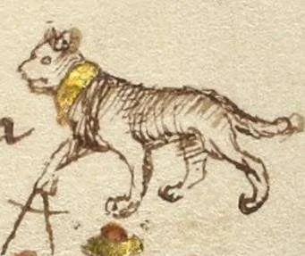
Prudentia
Prudence
Prudentia (sağduyu). Hiçbir canlı benden, vaşaktan daha iyi göremez ve ben her zaman dikkatle hesaplayarak ilerlerim.
s. 40Fiore'nin Getty nüshasındaki (Ms. Ludwig XV 13) 310 çizim; Abrazare'den A cavallo'ya kadar silah ve bölüme göre ayrıldı. Her çizimin yanında el yazmasının o çizime ait metninin tam Türkçe çevirisi var; her kategorinin başında da kısa bir özet bulunuyor. Bir çizime tıklayınca büyür, ok tuşlarıyla aynı kategoride ilerleyebilirsin. Folyo numaraları Getty el yazmasınındır.
Görseller: J. Paul Getty Museum, Ms. Ludwig XV 13 (Open Content Program). Türkçe metin: Colin Hatcher'ın Getty çevirisinden (Wiktenauer, “The Flower of Battle” derlemesi, 2016) Lycian Fighters tarafından çevrilmiştir; kaynak gibi CC BY-NC-SA 4.0 lisansıyla paylaşılır. Köşeli parantezli notlar derleme editörlerinindir.
Dört figür, dört rol. Fiore her çizimdeki kişiyi işaretle tanıtır. Başında taç olan Magistro'dur; guard'da bekleyen ya da ilk cover'ı yapan Remedy Master (Magistro Remedio) da taçlıdır. Dizinin altında altın jartiyer taşıyan Scolaro (scholar), ustasının cover'ından devam eden oyunları gösterir. Hem taç hem jartiyer taşıyan Contrario, o remedy'nin counter'ıdır. İşaretsiz rakip ise Zugadore'dir (player).
Bir counter, bütün öğrencileri kırar. Fiore'ye göre bir Remedy Master'a karşı yapılan counter, o ustanın bütün scholar'larının oyunlarını da bozar. Bu kural spear, azza, spada, daga ve Abrazare için, yani sanatın tamamı için geçerlidir.
Zogho Largo ve Zogho Stretto. Kılıçlar point'e yakın cross olursa Zogho Largo'dasın (geniş oyun): cut ve thrust'larla mesafede çalışırsın. Kılıçlar ortadan, yarı bıçakta cross olursa Zogho Stretto'dasın (dar oyun): grip, pommel, lock, disarm ve atışlar devreye girer.
Dört erdem. Kitabın başındaki Segno dört hayvanla dört erdemi anlatır: Prudentia (vaşak, sağduyu), Celeritas (kaplan, hız), Audacia (aslan, cesaret) ve Fortitudo (fil, sağlamlık). İyi bir dövüşçü bu dördünü birlikte taşır.
Volte ve adımlar. Üç dönüş vardır: volta stabile (yerinde dönüş), mezza volta (bir adımla taraf değiştirme) ve tutta volta (bir ayağın diğerinin etrafında dönmesi). Dört hareket de vardır: passare (pass), tornare (geri pass), acrescere (ilerleme) ve discrescere (geri çekilme).
Tek sanat, birçok silah. Aynı guard'lar her silahta yeniden karşımıza çıkar. Porta di Ferro Abrazare'de, daga'da, spada'da, azza'da ve lanza'da kullanılır; daga remedy'leri spada'nın Zogho Stretto'sunda tekrar görülür.
Kitabın başındaki yedi kılıç figüründen dört hayvan: iyi bir dövüşçünün taşıması gereken nitelikler.
4Fiore'nin Segno'sunda bir dövüşçünün etrafında yedi kılıç ve dört hayvan durur. Kılıçlar yedi vuruşu, hayvanlar ise dövüşte gereken dört erdemi temsil eder.

Prudence
Prudentia (sağduyu). Hiçbir canlı benden, vaşaktan daha iyi göremez ve ben her zaman dikkatle hesaplayarak ilerlerim.
s. 40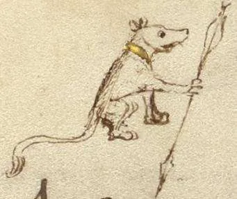
Celerity
Celeritas (hız). Ben kaplanım; koşmakta ve dönmekte o kadar hızlıyım ki gökten inen yıldırım bile beni yakalayamaz.
s. 41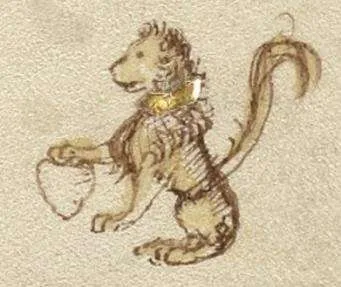
Audacity
Audacia (cesaret). Hiç kimsenin yüreği benden, aslandan daha cesur değildir; çünkü herkesi benimle savaşta karşılaşmaya davet ederim.
s. 42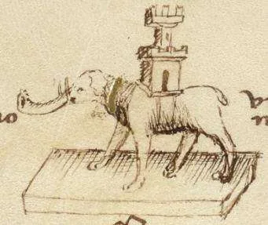
Fortitude
Fortitudo (sağlamlık). Ben filim ve sırtımda bir kale taşırım; ne dizlerimin üstüne çökerim ne de dengemi kaybederim.
s. 43Güreşin dört guard'ı.
4Fiore'ye göre güreşe girmeden önce rakibin güçlü mü, iri mi, genç mi olduğunu tart. Güreşte gerekenler güç, hız, iyi grip'ler, kırma, lock ve dislokasyonlar ile vücudun zayıf noktalarına vuruşlardır. Dört guard'dan da aynı ilk oyuna varılır.
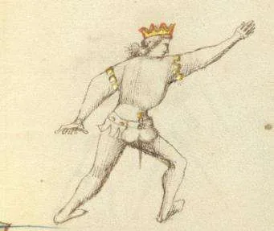
The Extended Guard
Ben Posta Longa'yım ve seni böyle ararım. Bana yapmaya çalışacağın ilk grip'e karşılık sağ kolumu senin sol kolunun altına sokarım. Sonra Abrazare'nin ilk oyununu yaparım ve o lock ile seni yere zorlarım. O lock beni yarı yolda bırakacak gibi görünürse, ardından gelen diğer lock'lardan birine geçerim.
Getty 6r-a · s. 46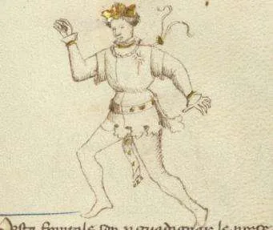
The Wild Boar’s Tooth
Sana Dente di Zenghiaro ile counter yaparım. Bu hareketle grip'ini kıracağımdan eminim. Bu guard'dan Porta di Ferro'ya geçebilirim ve bu seni yere zorlar. Savunman yüzünden planım boşa çıkarsa, seni incitmek için başka yollar ararım; örneğin bu çizimlerde gördüğün gibi kırmalar, bind'lar ve dislokasyonlarla.
Getty 6r-b · s. 47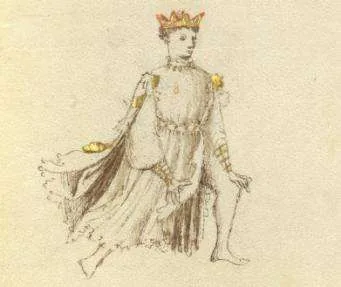
The Iron Gate
Seni Porta di Ferro'da kımıldamadan, bütün becerimle güreşmeye hazır beklerim. Bu guard yalnızca güreş sanatında değil, mızrak, azza, kılıç ve daga sanatında da kullanılabilir. Çünkü ben tehlikeyle dolu Porta di Ferro'yum. Bana karşı çıkanlar hep acı ve ıstırap içinde kalır. Ellerini üzerime koymaya çalışarak bana gelenlere gelince, sizi yere zorlarım.
Getty 6r-c · s. 48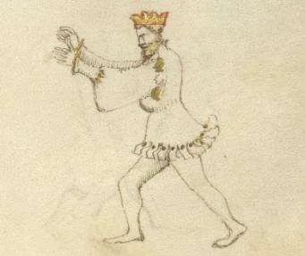
The Guard of the Headband
Ben Posta Frontale'yim; sana elimi koymak için kullanılırım. Şimdi bu guard'da sana gelirsem, ellerini üzerime koyabilirsin. Ama sonra bu guard'dan çıkarım ve ustalıkla seni Porta di Ferro'ya indiririm. Sonra cehennemin dibine düşmüşsün gibi acı çektiririm. Sana lock'lar ve dislokasyonlarla öyle etkili hizmet ederim ki üstünlüğümü çabucak kabul edersin. Becerilerimi unutmadığım sürece üstün grip'lerimi elde ederim.
Getty 6r-d · s. 49Remedy Master ve scholar'larının güreş oyunları; counter'lar dahil.
16Birinci ve ikinci oyun. Rakibin sağ dirseğinin içine sol elle bastır, sağ eli onun sol dirseğinin arkasına koy ve gövdeyi sola döndür: ya yere düşer ya da kolu çıkar. Rakip sol elini omzundan çekerse sol bacağını ve boğazını kavrayıp sırtüstü atarsın (üçüncü oyun).
Diğer scholar'lar. Boğaza grip ve dizin altından kaldırma, başparmakla kulak altına baskı, Gambarola (bacak üstünden atış), kasığa diz ve rakibi arkadan tutma bitirişleri. Çoğunun hemen ardından counter'ı gelir: dirseği yukarı itip rakibi döndürmek.
Fiore'nin uyarısı. Oyunlar her durumda işe yaramaz. İyi bir grip'in yoksa hemen bir tane ara ki rakip avantajı almasın.
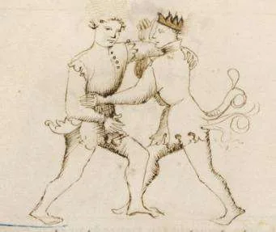
First Scholar
Bu güreşin ilk oyunudur ve her güreş guard'ından bu oyuna varabilirsin. Bu pozisyondan şöyle devam et: sol elinle rakibin sağ dirseğinin içine bastır, sağ elini de gösterildiği gibi onun sol dirseğinin arkasına ve üzerine getir. Şimdi hemen ikinci oyunu yap; yani onu böyle tutmuşken gövdeni sola çevir; sonuçta ya yere düşer ya da kolu çıkar.
Getty 6v-a · s. 50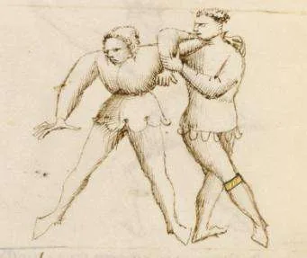
Second Scholar
Birinci Master'ın scholar'ının dediği gibi, bu adamı ya sol kolunu kırarak ya da çıkararak yere indireceğimden eminim. Birinci Master'la dövüşen player savunma yapmak için sol elini Remedy Master'ın omzundan çekerse, ben de hemen sol elimle onun sağ kolunu bırakırım; onun yerine sol elimle sol bacağını, sağ elimle de boğazını kavrayıp onu yere atarım; üçüncü oyunda gördüğün gibi.
Getty 6v-b · s. 51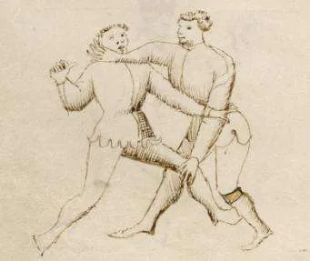
Third Scholar
Benden önceki scholar doğru söylüyor: kendi grip'inden rakibini yere zorlar ya da sol kolunu çıkarır. Sana söylediği gibi, player sol elini Remedy Master'ın omzundan çekerse, Remedy Master burada gördüğün üçüncü oyuna geçer. Yani birinci ve ikinci oyun aslında tek bir oyundur: Remedy Master gövdesini çevirerek player'ı yere zorlar. Bu üçüncü oyunda ise player sırtüstü yere atılır.
Getty 6v-c · s. 52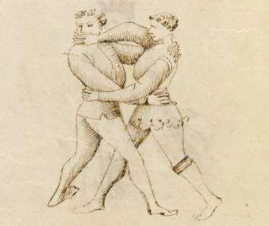
Fourth Scholar
Bu güreşin dördüncü oyunudur; bununla scholar player'ı kolayca yere zorlayabilir. Onu böyle yere zorlayamazsa, aşağıda çizili göreceğin başka oyunlar, teknikler ve yöntemler arar. Bilmelisin ki oyunlar ve teknikler her durumda işe yaramaz; bu yüzden iyi bir grip'in yoksa hemen bir tane ara ki rakibin üzerinde hiçbir avantaj kazanmasın.
Getty 6v-d · s. 53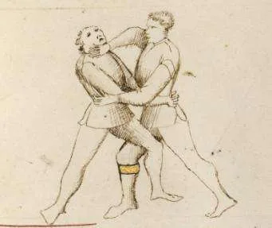
Fifth Scholar
Sağ elimle boğazına yaptığım bu grip sana acı ve ıstırap getirir ve onunla seni yere zorlarım. Şunu da söyleyeyim: sağ elimle seni sol dizinin altından da kavrarsam, seni yere çakacağımdan daha da emin olurum.
Getty 7r-a · s. 54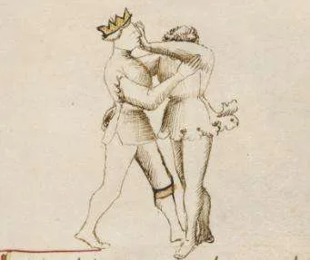
Counter to the Fifth Scholar
Daha önce gösterilen beşinci oyunun counter'ıyım. Şunu açıklayayım: bana zarar vermeye çalışan elinin dirseğini sağ elimle yukarı itersem, onu öyle döndürürüm ki ya burada çizildiği gibi yere zorlarım ya da bir grip veya lock kazanırım; böylece onun güreş becerisini pek umursamam.
Getty 7r-b · s. 55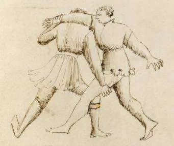
Sixth Scholar
Kazandığım bu grip'ten ve seni tutuş biçimimden, gücümle seni yerden kaldırır, önce başın, ardından gövden gelecek şekilde ayaklarımın dibine atarım. Bana kalırsa bana counter yapamazsın.
Getty 7r-c · s. 56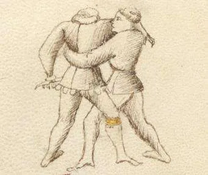
Seventh Scholar
Beni yere atmak için arkadan yakaladın, ben de böyle döndüm. Seni yere atamazsam şanslı bir kaçış yaşamış olursun. Bu oyun iyi bir bitiriştir; ama hızlı yapılmazsa bu remedy boşa çıkar.
Getty 7v-a · s. 57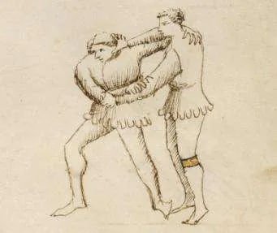
Eighth Scholar
Başparmağımla kulağının altına bastırdığımda o kadar acı duyarsın ki kesinlikle yere düşersin, ya da senin için işkenceden beter olacak başka bir grip veya lock yaparım. Yapılabilecek counter, beşinci oyuna karşı yapılan altıncı oyundur: rakibin dirseğinin altına elini koymak. Bu counter burada bana kesinlikle yapılabilir.
Getty 7r-d · s. 58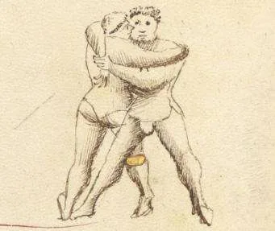
Ninth Scholar, the Gambarola
Bu, bacağın üzerinden atış (Gambarola) içeren bir oyundur ve Abrazare'de riskli bir harekettir. Bu bacak atışını başarıyla yapmak istiyorsan, onu güç ve hızla yapman gerekir.
Getty 7v-b · s. 60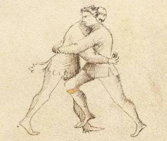
Tenth Scholar
Bu scholar rakibini yere atmak için avantaj kazanmak üzere kasığına dizle vurur. Counter yapmak için: rakibin dizle kasığına vurmak üzere hızla girdiğinde, sağ elinle onun sağ bacağını dizin altından kavra ve onu yere at.
Getty 7v-d · s. 61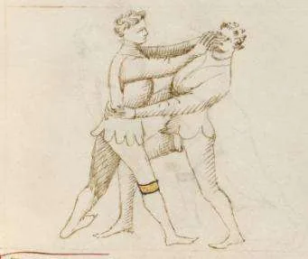
Eleventh Scholar
İki kolunla benim kollarımın altından beni kavrarsan, iki elimle yüzüne vururum. İyi zırhlı olsan bile bu seni bırakmaya zorlar. Bu oyunun counter'ı, sağ elini rakibinin sol dirseğinin altına koyup sertçe yukarı itmektir; böylece kendini kurtarabilirsin.
Getty 8r-a · s. 62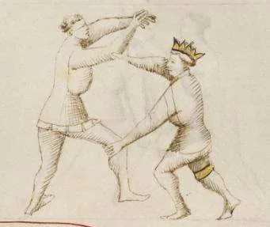
Counter to the Eleventh Scholar
Bu, on üçüncü [on ikinci] oyunun counter'ını nasıl yaptığımı gösteriyor. Gördüğün gibi elleri yüzümden çekildi. Bu grip'ten onu yere atamazsam küçümsenmeyi hak ederim.
Getty 8r-b · s. 63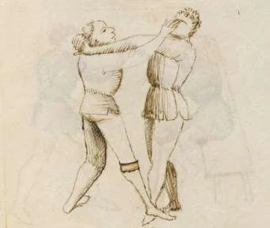
Twelfth Scholar
İki kolunla rakibinin kollarının altından grip'e girersen, burada çizildiği gibi yüzüne saldırabilirsin; özellikle yüzü korumasızsa. Buradan güreşin üçüncü oyununa da geçebilirsin.
Getty 8r-c · s. 64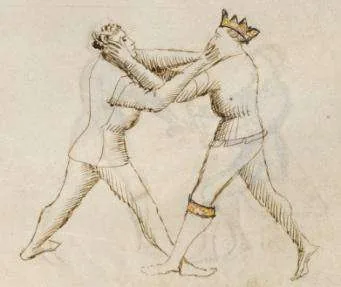
Counter to the Twelfth Scholar
Bu, on dördüncü [on üçüncü] oyunun counter'ıdır; ayrıca güreşirken rakibimin ellerini yüzüme koyduğu her oyunun counter'ıdır. Yüzü korumasızsa başparmaklarımı gözlerine bastırırım. Yüzü korumalıysa dirseğinin altından yukarı iterim ve hemen bir grip'e ya da bind'a geçerim.
Getty 8r-d · s. 66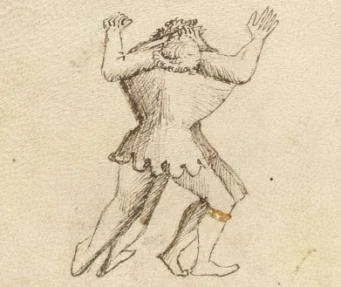
Thirteenth Scholar, the Outsider
Bu bir bitiriş hareketidir ve birini tutmanın iyi bir yoludur, çünkü kendini savunamaz. Counter için tutulan kişi olabildiğince hızlı bir duvara ya da direğe gitmeli ve kendini geriye doğru ona çarpmalıdır; böylece onu tutan adam başını ya da sırtını o duvara veya direğe çarpar.
Getty 7v-c · s. 67Kısa bir sopayla boğaz bind'ı, bacak arası kaldırma ve daga remedy'lerinin sopayla yapılışı.
4Kısa sopa rakibin boynuna sarılarak güçlü bir bind kurar; zırhlı rakibe karşı sopayı bacakların arasından geçirip onu sırtüstü çevirmek daha iyidir. Sopayla yapılan cover'lar, Altıncı ve Sekizinci daga Remedy Master'larının cover'larıdır; aynı iş bir başlık ya da iple de yapılabilir. Getty'de bu iki çizimin metinleri yer değiştirmiş görünür.
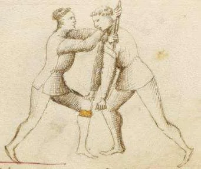
First Scholar
Bak, kısa bir sopayla seni boynundan nasıl bind'da tutuyorum. Buradan seni yere atmak istersem pek zorlanmam. Sana daha kötüsünü yapmak istersem bu güçlü bind'ı uygulamaya devam edebilirim. Ve bu oyuna counter yapamazsın.
Getty 8v-a · s. 70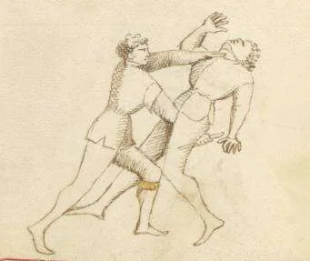
Second Scholar
İyi zırhlı olsaydın bu oyunu sana bir öncekinden daha çok yapmak isterdim. Şimdi seni kısa sopayla bacaklarının arasından yakaladım; ona at gibi binmiş durumdasın, ama seni sırtüstü ters çevirmeme kadar uzun süre böyle sıkışık kalmazsın.
Getty 8v-b · s. 71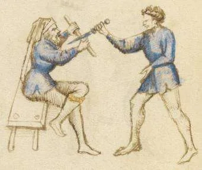
Third Scholar
Ben daga'nın Altıncı Remedy Master'ının scholar'ıyım; o kendi daga'sıyla bu şekilde counter yapar. Ve onun onuruna bu cover'ı kısa sopamla yapıyorum. Buradan hızla ayağa kalkar ve Master'ımın oyunlarını yaparım. Kısa sopayla yaptığım bu cover bir başlıkla da yapılabilir… [Bu çizim bir sonraki oyunun metnine eşlik ediyor; tarife bakılırsa bu neredeyse kesin bir hatadır.] Bu harekete counter, Master'ımın [daga bölümünde] gösterdiği counter'ın aynısıdır.
Getty 8v-c · s. 72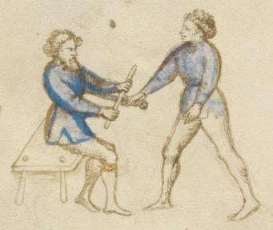
Fourth Scholar
Bu remedy'yi daga'nın Sekizinci Remedy Master'ından aldım ve yalnızca bu kısa sopayla silahlanmış olarak kendimi savunabilirim. Bu cover'ı yaptıktan sonra ayağa kalkarım ve Master'ımın bütün oyunlarını yapabilirim. Kendimi bu şekilde bir başlıkla ya da bir ip parçasıyla da aynı derecede iyi savunabilirim… [Bu çizim bir önceki oyunun metnine eşlik ediyor; tarife bakılırsa bu neredeyse kesin bir hatadır.] Bu harekete counter, Master'ımın gösterdiği counter'ın aynısıdır.
Getty 8v-d · s. 74Daga'ya karşı yapılması gereken beş şeyi temsil eden ustalar.
5Tehlikeli daga'ya karşı kollar, eller ve dirsekler hızla gitmelidir ve şu beş şeyden biri yapılmalıdır: daga'yı almak, vurmak, kolu kırmak, kolu bind'a almak ve rakibi yere indirmek. Her usta bunlardan birini simgesiyle taşır: elindeki daga (disarm), kırık kollar (kırma), anahtarlar (lock), ayağının altındaki adam (atış) ve zafer palmiyesi.
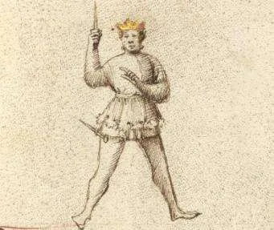
Master of Disarms
Sağ elimde senin daga'nı tutuyorum ve onu becerimle kazandım. Becerim o kadar iyidir ki bana daga çekersen onu elinden alırım. Ve ne kadar avantajın olursa olsun, seni bitirmek için nasıl vuracağımı iyi bilirim.
Getty 10r-a · s. 78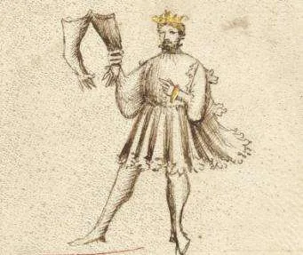
Master of Breaks
Becerimi taşıdığım kırık kollarla simgelemeyi seçiyorum. Hayatımda pek çok kolu kırıp çıkardığımı söylediğimde yalan söylemiyorum. Ve sanatıma karşı gelmeyi seçen herkes, o sanatı ona karşı kullanmaya beni her zaman hazır bulacaktır.
Getty 10r-b · s. 79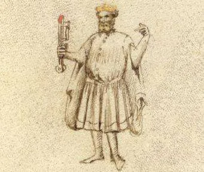
Master of Locks
Ben bana karşı çıkmayı seçenlerin kollarının lock'unu açan ve kilitleyen Master'ım. Bind ve dislokasyon tekniklerimle onlara büyük acı ve ıstırap çektiririm. Sanatımın değerini simgelemek için bu anahtarları taşırım.
Getty 10r-c · s. 80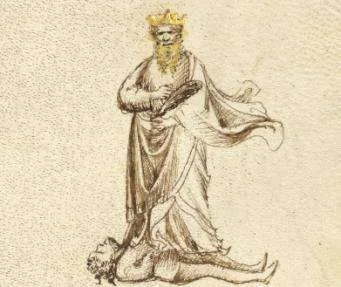
Master of Throws
Bu adamı nasıl ayaklarımın altında tuttuğumu soruyorsun. Güreş sanatım yüzünden binlercesi bu kaderi yaşadı. Ve sağ elimde zafer palmiyesini taşırım, çünkü güreş becerilerime kimse karşı koyamaz.
Getty 10r-d · s. 81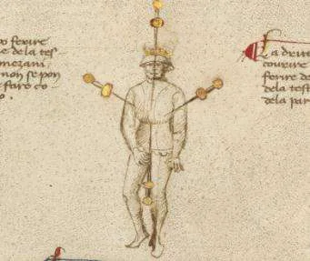
Master of Strikes
Herkes tehlikeli daga ile karşılaştığında dikkatli olmalı; kolların, ellerin ve dirseklerin hızla ona karşı gitmeli ve şu beş şeyi yapmalı: daga'yı almak, vurmak, kolları çıkarmak, kolları bind'a almak ve rakibini yere zorlamak. Bu beş şeyden birini ya da diğerini yapmayı asla ihmal etme. Ve kendini savunmak isteyen, kendini bu şekilde korusun.
Getty 9v · s. 82Beş guard: bazıları zırhlı, bazıları zırhsız, bazıları ikisinde de iyidir.
5Fiore daga guard'larını zırhla ilişkisine göre ayırır. Tek el (scempia) guard'lar uzun cover yapabildiği için zırhsız da iyidir; iki el ya da çapraz kollu (incrosada) guard'lar ise zırhta çok güçlüdür ama uzun cover yapamaz.
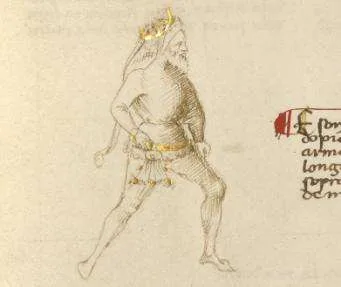
Full Iron Gate (Single)
Bu beş figür daga'nın guard'larıdır; bazıları zırhla iyidir, bazıları zırhsız iyidir, bazıları hem zırhla hem zırhsız iyidir, bazıları zırhla iyi ama zırhsız iyi değildir; hepsi aşağıda gösterilmiştir. Ben Tutta Porta di Ferro scempia'yım (tek). Zırhla da zırhsız da iyiyim, çünkü bir saldırıyı güreşe girerek ya da girmeden savuşturabilirim. Cover'larımı yaparken daga'lı ya da daga'sız oynayabilirim.
Getty 9r · s. 83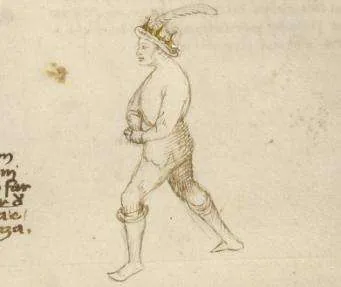
Full Iron Gate (Double)
Ben Tutta Porta di Ferro dopia'yım (çift); zırhla da zırhsız da iyiyim, ama her durumda zırhla zırhsızdan daha iyiyim. Böyle bir guard'la daga kullanamam.
Getty 9r-b · s. 84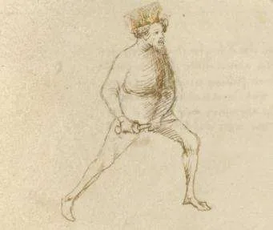
Middle Iron Gate (Double)
Ben elinde daga ile Mezana Porta di Ferro'yum ve çiftim; diğerlerinin hepsinden daha iyi ve daha güçlüyüm. Zırhla da zırhsız da iyiyim ve her iki yanda alttan da üstten de cover yapabilirim.
Getty 9r-e · s. 85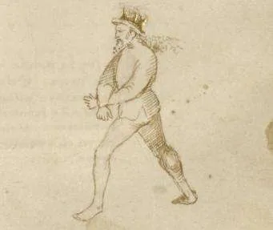
Full Iron Gate (Double, Crossed)
Ben de kolları çapraz ve çift Tutta Porta di Ferro'yum. Güçlü bir kale gibiyim ve zırhla özellikle güçlüyüm. Ama zırhsız yeterli değilim, çünkü uzun cover yapamam.
Getty 9r-f · s. 86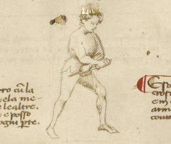
Middle Iron Gate (Double, Crossed)
Ben de [daga ile] çift ve çapraz Mezana Porta di Ferro'yum. Zırhla iyiyim ama zırhsız değil, çünkü uzun cover yapamam; ama sağdan ve soldan, daga'lı ya da daga'sız, üstten ve alttan cover yapabilirim. [Bu guard sayfanın ortasında görünmesine rağmen burada sona konmuştur; çünkü diğer dördü yazılıp çizildikten sonra oraya eklenmiş gibi görünür.]
Getty 9r-c · s. 87Yukarıdan gelen daga'ya karşı tek elle cover; disarm, bind ve atışlar.
21Remedy. Usta yukarıdan inen daga'yı sol eliyle bileğin üstünden karşılar ve elini sola çevirerek daga'yı yere düşürür. Fiore bundan daha iyi bir oyun olmadığını söyler.
Scholar'lar. Ligadura mezana (middle bind), dizin altından kaldırıp atma, counter'ı olmayan üçüncü oyun, iki kolla yapılan güçlü cover ve kolu omuz üstünde kırma. Dirseğe yakın point'i yukarı itip daga'yı alma da bu ustaya aittir.
Counter'lar. Daga'yı kolun etrafından çevirmek, cover yapanın sol elini yakalamak ve dirseği iterek onu döndürmek. Fiore uyarır: sol elini yakalatan remedy'nin vay haline.
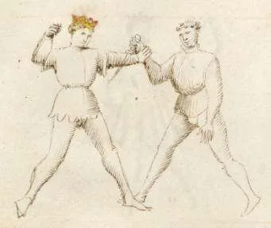
First Remedy Master
Ben birinci Master'ım ve adım Remedy'dir; çünkü remedy yapmayı o kadar iyi bilirim ki sen bana zarar veremezsin, ben ise tersine sana vurup seni incitebilirim. Sana karşı, elimi sola çevirerek daga'nı yere düşürmekten daha iyi bir oyun yapamam.
Getty 10v-a · s. 90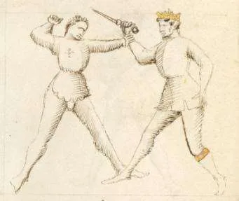
First Counter to the First Remedy
Daga'mı senin kolunun etrafından çeviririm. Bu counter yüzünden daga'yı benden alamazsın. Ayrıca bu dönüşle onu hiç şüphesiz göğsüne saplayabilirim.
Getty 10v-b · s. 91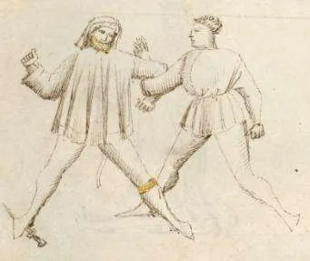
First Scholar of the First Remedy
Kolunu ligadura mezana'da (middle bind) lock'larım ve bunu öyle yaparım ki bana hiçbir sorun çıkaramazsın. Seni yere indirmek istersem bunu az çabayla yaparım ve kaçma şansın olmaz.
Getty 10v-c · s. 92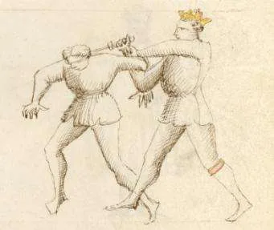
Counter to the First Scholar
Benden önce gelen oyunun counter'ını yaparım. Onu ne tür bir pozisyona soktuğumu görebilirsin. Kolunu kırarım ya da onu hızla yere atarım.
Getty 10v-d · s. 93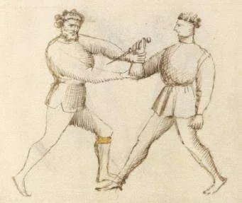
Second Scholar of the First Remedy
Bu, daga'nı elinden almak için iyi bir cover'dır ve bu grip'le seni iyice bind'a alabilirim. Bu sanat o kadar etkilidir ki sağ elimi senin sağ dizinin altına koyarsam seni yere indiririm.
Getty 11r-a · s. 94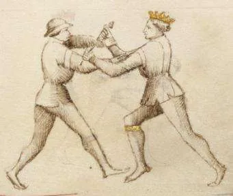
Counter to the Second Scholar
Benden önce gelen oyunun counter'ını yaparım; böylece ne beni yere atabilirsin, ne daga'yı benden alabilirsin, ne de beni bind'a alabilirsin. Bırakmak zorunda kalırsın, yoksa daga'mla hızla bıçaklanırsın.
Getty 11r-b · s. 95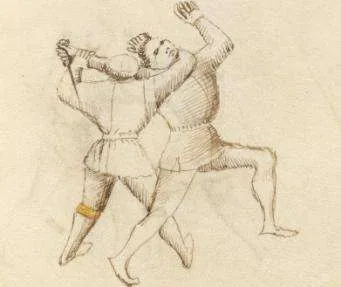
Third Scholar of the First Remedy
Bu counter'ı olmayan bir oyundur; scholar bu tekniği çizildiği gibi yaparsa player'ın yere düşmesi ve daga'sını kaybetmesi kaçınılmazdır. Player yere atıldığında scholar onu çeşitli yollarla bitirebilir.
Getty 11r-c · s. 96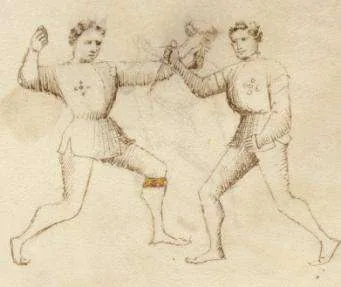
Fourth Scholar of the First Remedy
Bu oyun daga sanatında nadiren kullanılır, yine de bilinmesi gereken ek bir savunmadır. Çünkü saldırıyı bu şekilde savuşturduktan sonra scholar kaburgalara ya da karna bir counter ile vurabilir.
Getty 11r-d · s. 97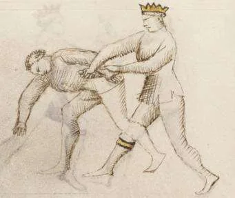
Second Counter to the First Remedy
Ben Birinci Daga Remedy Master'ına bir counter'ım. Sol elinin yakalanmasına izin veren tekniklerle remedy yapanın vay haline. Bu grip'ten daga'yı onun sırtına saplayabilirim.
Getty 11v-a · s. 98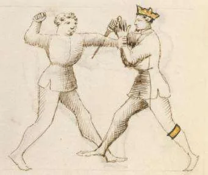
Fourth Counter to the First Remedy
Ben de Birinci Daga Remedy Master'ının counter'ıyım; onun scholar'ı beni böyle tuttuğunda ona vururum ve bırakmasını sağlarım. Bana başka oyunlar yapmaya çalışırsa tereddüt etmeden ona counter yaparım.
Getty 11v-b · s. 102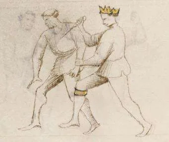
First Scholar of the Fourth Counter
Bu, önceki oyunda sözü edilen counter'dan [Dördüncü Contrario] çıkar. Ayrıca iki oyun önce sözü edilen counter'dan [İkinci Contrario] da çıkar; orada counter-remedy Master rakibinin elini daga'sıyla tuzağa düşürmüştür ve daga'yı rakibinin sırtına saplayabileceğini söylemiştir. Benim oyunum o oyundan gelir; ama o daga'yı rakibin sırtına sapla derken ben onu göğsüne saplarım. Yine de farklı bitirmeyi seçsem de bu bir önceki oyundan çıkar.
Getty 11v-c · s. 103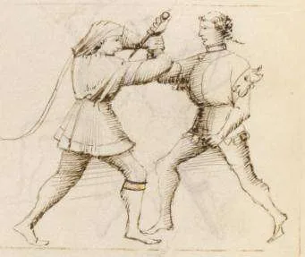
Fifth Scholar of the First Remedy
Ben birinci Remedy Master'ın scholar'ıyım. Bu grip'le daga'nı almaya ve kolunu bind'a almaya çalışırım; bana nasıl counter yapacağını bildiğine inanmadığım için bunu sana hiç gecikmeden yaparım.
Getty 11v-d · s. 104Counter to the Fifth Scholar
Sana böyle counter yaparım; böylece ne daga'mı alırsın ne de kolumu bind'a alırsın, ben ve daga'm serbest kalırız. Sonra beni bıraktığında sana hiçbir savunman olmayacak şekilde vurabilirim.
Getty 12r-a · s. 105Sixth Scholar of the First Remedy
Bu cover'ın çok daha güçlü olduğu bilinir ve onu seni çeşitli oyunlarla engelleyebilmek için yaparım. Böyle güçlü bir cover'ı yenemezsin, çünkü iki kol bir kola kolayca karşı koyabilir.
Getty 12r-b · s. 106Counter to the Sixth Scholar
Bu, benden önce gelen ve sana çok daha güçlü olduğunu söylediğim cover'ın counter'ıdır. Onu sol elimle döndürürüm. Onu döndürdükten sonra vurmayı ihmal etmem.
Getty 12r-c · s. 107Seventh Scholar of the First Remedy
Sana karşı yaptığım bu mükemmel presa ile kolunu sol omzumun üzerinden kırmayı ihmal etmem. Sonra sana kendi daga'nla vurabilirim, çünkü bu oyun beni yarı yolda bırakmaz.
Getty 12r-d · s. 108Counter to the Seventh Scholar
Önceki oyunda kolumu omzunun üzerinden kırmaya niyetlenen sana bu counter'ı yaparım. Seni büyük bir güçle ölümüne yere atarım ve bana daha fazla zarar veremezsin.
Getty 12v-a · s. 109Eighth Scholar of the First Remedy
Daga'nı elinden almak için iyi bir pozisyondayım; bunu yapmak için point'i dirseğine yakın yukarı iterim. Onu kaybedersin ve ben de hızla onunla sana vururum. Daga'yı bu şekilde aldım çünkü kolunu bükemedim.
Getty 12v-b · s. 110Counter to the Eighth Scholar
Bir önceki oyunun counter'ını yaparım; böylece daga'mı o şekilde alamazsın. Daga'mı eline bastırarak bırakmanı sağlarım ve zahmetinin karşılığı olarak acımasız point'le sana vururum.
Getty 12v-c · s. 111Ninth Scholar of the First Remedy
Bu şekilde yere çakılırsın ve hiçbir savunma ya da counter yapamazsın. Bu sanattaki ustaca bilgim sayesinde elindeki daga'yı hızla senden uzağa göndereceğim.
Getty 12v-d · s. 112Counter to the Ninth Scholar
Planladığın şey her zaman yapılamaz. Ben benden önceki scholar'ın counter'ıyım ve bu counter onu çok aptal gösterecek; çünkü bu şekilde bacağımı bırakmasını sağlarım. Ve gerçekten büyük bir aptal olduğunu göstermek için daga'yı yüzüne saplarım.
Getty 13r-a · s. 113Çapraz kollarla cover ve chiave di sopra (upper key).
4Usta kollarını çaprazlayarak cover yapar ve önceki bütün remedy'leri buradan uygulayabilir; zırhlıyken bundan güçlü cover yoktur, sağa ve sola, alttan ve üstten cross yapabilir. Scholar'ı chiave di sopra ile kolu kırar, rakibi atar ya da daga'yı alır. Counter, dirseğe itip rakibi döndürmek ve vurmaktır.
Second Remedy Master
Kollarım çapraz oynarım ve daha önce gösterilen bütün remedy'leri yapabilirim. İkimiz de zırhlı olsaydık daha iyi bir cover yapamazdın. Taçlı Remedy Master'lardan hiçbiri benden daha güçlü cover yapmaz; çünkü hem sağa hem sola oynayabilirim, hem alttan hem üstten cross yapabilirim.
Getty 13r-b · s. 116Counter to the Second Remedy
Benden önce cross yapan Remedy Master'a counter yaparım; böylece cross'uyla bana hiçbir sorun çıkaramaz. Onu döndürmek için dirseğine bir itiş veririm, sonra hızla ona vururum.
Getty 13r-c · s. 117First Scholar of the Second Remedy, the Upper Key
Bu çok güçlü grip'in herkes için ölümcül olduğuna inanırım; çünkü kolunu kırabilirim, seni yere atabilirim ya da daga'nı alabilirim. Seni chiave di sopra'da (upper bind) bind'da da tutabilirim. Bu dört şey yüzünden kaçamazsın.
Getty 13r-d · s. 118Counter to the First Scholar
Önceki oyunun counter'ını bilirim. Bu grip'le onun daha önce yapabileceğini söylediği dört oyunun hepsine counter yaparım. Beni görür görmez onu yere atarım, çünkü bu grip güçlü ve şiddetlidir. Burada sayısız adamın hayatını kaybettiği roverso (ters) vuruşların oyunları başlar.* Ardından sağ elle yapılan cover'ı gösteren scholar'larımın oyunları gelir… * Ya da “ters cover”.
Getty 13v-a · s. 119Ters (roverso) vuruşlara karşı oyunlar ve chiave di sotto.
7Bu usta roverso, yani ters yönden gelen daga vuruşlarını karşılar. Scholar'lar rakibi yere çakar, kolu çıkarır ve onu chiave di sotto'ya, Fiore'nin “strong key” dediği alt lock'a alır: bu bind'dan kimse kaçamaz ve zırhlı ya da zırhsız her zayıf noktaya vurulabilir. Counter'ı da güçlü bir bind'dır.
Third Scholar of the Third Remedy
Çizilen bu oyunu yapmak kolaydır ve bu adamı bu şekilde yere atarım.
s. 126Fourth Scholar of the Third Remedy
Bu yöntemle yere çakılırsın. Zırhlıyken daha güvenli bir atış yapamazdım. Ama zırhsız bile yapabileceğin bir şey yok. Güçlü ve kuvvetli olsan bile bunu sana yine yapabilirim.
Getty 13v-c · s. 127Fifth Scholar of the Third Remedy
Taçlı Master'ımın becerisiyle yere düşersin ve kolun çıkar. Bana yapabileceğin tek bir counter yok; çünkü seni böyle tutarım ve sana büyük acı çektiririm.
Getty 13v-d · s. 128Seventh Scholar of the Third Remedy
Bu counter'ı ve savunması olmayan bir lock'tur. Bu şekilde daga'nı alabilirim ve kolunu bind'a almak ya da çıkarmak zahmet olmaz. Benim iznim olmadan kaçamazsın. Ve istersem kolunu mahvedebilirim.
Getty 14r-a · s. 130Eighth Scholar of the Third Remedy
Seni tutuş biçimimden dolayı daga'nı kaybedeceksin. Daga'nı aldıktan sonra seni bind'a alabilir ve anahtar bind'lardan biri olan chiave di sotto'da (lower lock) acı çektirebilirim; bunu sana uygulayacağım. Bu lock'a sokulan kimse, katlanmak zorunda kalacağı büyük acı ve ıstırap yüzünden kaçamaz.
Getty 14r-b · s. 131Tenth Scholar of the Third Remedy, the Lower Key
Buna chiave di sotto (lower lock) denir, “strong key” olarak da bilinir. Bu bind'dan seni, zırhlı da olsan zırhsız da olsan öldürebilirim; çünkü buradan en savunmasız bütün yerlerine vurabilirim. Bu bind'dan kimse kaçamaz. Çizimdeki gibi içine sokulursan orada çok acı ve ıstırap çekerek kalırsın.
Getty 14r-c · s. 133Counter to the Third Remedy
Bu, roverso saldırıyı cover eden Üçüncü Daga Remedy Master'ının counter'ıdır.* Ona karşı bu bind'ı yaptım. Zırhlı da olsa zırhsız da olsa bu bind güçlü ve sağlamdır. Zırhsız bir adamı bu şekilde yakalarsam elini mahveder ve çıkarırım. Acı o kadar büyük olur ki onu ayaklarımın dibinde diz çöktürürüm. Ona vurmak istersem bunu da yapabilirim. * Ya da “ters elle”.
Getty 14r-d · s. 134İki elle grip'ten upper bind'lar, disarm ve atışlar.
8Usta rakibin kolunu iki eliyle yakalayarak oynar. Scholar'lar iki ayrı upper bind ile kolu kilitler, dirseğin altından ve dizin arkasından tutup atar, daga'yı dirsek yakınında yukarı ya da yatay çevirerek alır. Upper bind'a karşı rakip sağ elini sol eliyle kavrarsa grip'i güçlenir ve lock bozulur. Counter, tek bir sert burkmayla öğrencinin de ustanın da elini bozar.
Fourth Remedy Master
Ben Dördüncü Master'ım ve bu grip'ten oynarım. Bunun gibi cover'lardan scholar'larım pek çoğunu incitecek…
Getty 14v-a · s. 136First Scholar of the Fourth Remedy
Kolunu bırakmadan sağa dönersem daga'nı alırım ve sana büyük acı çektiririm.
s. 137Second Scholar of the Fourth Remedy
Bu seni çok iyi kilitleyen bir upper bind'dır. Daga'nı senden alır ve seni yere atarım. Kolunu da çıkarabilirim. Ama sol elinle sağ elini kavrarsan bana counter yapabilir ve seni bırakmamı sağlayabilirsin.
Getty 14v-b · s. 138Third Scholar of the Fourth Remedy, the Upper Key
Bu çok güçlü başka bir upper bind'dır. Bununla seni yere atacağımdan eminim. İstersem kolunu çıkarabilirim. Bana counter yapmak için sol elinle sağ elini kavrarsın. O zaman senin grip'in güçlü, benimki zayıf olur.
Getty 14v-c · s. 139Fifth Scholar of the Fourth Remedy
Master'ımın cover'ını yaptıktan sonra sol elimi senin sağ dirseğinin altına koydum. Sağ elim de hızla seni dizinin altından kavradı; öyle ki seni yere atabildim ve bana yapabileceğin hiçbir counter yoktu.
Getty 14v-d · s. 141Sixth Scholar of the Fourth Remedy
Sağ elimle daga'na yatay bir dönüş yaptıracağım ve onu tuttuğum koluna yakın döndürerek iteceğim. Daga'n benim kontrolümde olacak. Sonra sana hak ettiğin gibi davranacağım.
Getty 38r-a · s. 142Seventh Scholar of the Fourth Remedy
Daga'nı dirseğine yakın yukarı kaldırırsam onu elimde tutar ve sana kesinlikle vururum. Ama sol elinle bana counter yapamayacağından emin olmak için bu oyunu çok hızlı yapmam gerekir.
Getty 38r-b · s. 143Counter to the Fourth Remedy
Ben Dördüncü Remedy Master'a karşı counter-remedy'yim. Benden önce gelen bütün oyunlarına counter yaparım. Bunun gibi tek bir hızlı burkmayla bu scholar'ın elini de Master'ının elini de mahvederim. İyi zırhlılarsa ellerinin mahvolması daha da kesin olur.
Getty 38r-c · s. 145Yakadan tutulunca savunma; kol kırma ve lock'lar.
12Rakip yakandan tutup daga ile vurmak üzereyken usta onun kolunu bozar; yakadan tutulmak aslında savunana avantaj verir, yeter ki hızlı davranılsın. Scholar'lar çapraz kollarla bekler ve rakibi middle ya da lower lock'a alır, kolu omuz üstünden çıkarır, ayağı arkaya atıp yere indirir. Bitişte daga ters çevrilip point göğse sokulur. Counter, kolu kendine çekip bükmektir.
Fifth Remedy Master
Ben bu player'ın yaptığı yaka tutuşuna karşı savunma yapan Beşinci Daga Remedy Master'ıyım. Daga'sıyla bana vurmadan önce kolunu böyle mahvederim; çünkü bana yaptığı grip aslında benim lehimedir. Benden önce gelen diğer remedy Master'larının ve scholar'larının bütün cover'larını, grip'lerini ve bind'larını yapabilirim. Bunu deneyimle söylüyorum: bu sanatı çalışan herkes şunu bilmeli ki hızlı davranmazsan yaka tutuşuna karşı başarılı savunma yapamazsın.
Getty 38r-d · s. 148First Scholar of the Fifth Remedy
Kollarım çapraz seni korkusuzca beklerim. Üstten mi alttan mı geldiğin umurumda değil; çünkü nasıl gelirsen gel bind'a alınırsın. Ya ligadura mezana'da (middle lock) ya da chiave di sotto'da (lower lock) kilitlenirsin. Dördüncü Daga Remedy Master'ının oyunlarını yapmak isteseydim bu oyunlarla sana büyük zarar verirdim. Daga'nı almakta da hiç zorlanmam.
Getty 15v-a · s. 149Second Scholar of the Fifth Remedy
Bu, kolu mahvetmenin başka bir yoludur. Bu oyundan başka oyunlara ve grip'lere geçebilirim. Ayrıca bir mızrakla sıkıştırılmışsan, ona karşı bu vuruşu yaparak ya kendini kurtarırsın ya da sapı mızrak ucundan koparırsın. Bu, seni bırakmaya zorlamanın başka bir yoludur ve mızrak ucunu koparmak için de daha iyi bir yöntemdir. Ayrıca yakamı tutan elinin bilek eklemine sertçe vurursam, bırakmazsan onu kesinlikle çıkarırım. Sana counter'ı da söylemek istiyorum: scholar player'ın elini kurtarmak için kollarıyla aşağı vururken, player hızla elini scholar'ın yakasından çeker ve hemen daga'sıyla scholar'ın göğsüne vurur.
Getty 38v-a · s. 150Fourth Scholar of the Fifth Remedy
Bu oyun beni bırakmanı sağlar. Ayrıca sağ ayağımı senin sol ayağının arkasına ilerletirsem, kesinlikle yere atılırsın. Bu oyun yetmezse daga'n üzerinde başkalarını denerim; çünkü yüreğim ve gözlerim daga'nı hızla ve gecikmeden almaktan başka hiçbir şeye odaklanmaz.
Getty 38v-c · s. 154Fifth Scholar of the Fifth Remedy
Daga'n bana yaklaşamadan seni böyle yere atarım. Daga'n bana vurmak için orta çizgiden inerse, grip'imi bırakır ve daga'nla ilgilenirim; böylece beni hiçbir şekilde yaralayamazsın. Sonra remedy oyunlarıyla sana acı çektiririm.
Getty 38v-d · s. 155Sixth Scholar of the Fifth Remedy
Bu player beni yakamdan tutmuştu; ama daga'sıyla bana vuramadan ellerimle hızla onun sol elini kavradım ve kolunu çıkarmak için omzumun üzerinden çektim, sonra tamamen çıkardım. Ama bu oyunu zırhla yapmak zırhsız yapmaktan daha güvenlidir.
Getty 15r-a · s. 156Seventh Scholar of the Fifth Remedy
Seni bu şekilde kesinlikle yere fırlatırım. Daga'nı da kesinlikle alırım. Zırhlıysan bu sana yardımcı olabilir, çünkü senin canını kendi daga'nla almayı hedefleyeceğim. Ama zırhlı olsak bile bu sanat beni yarı yolda bırakmaz. Zırhsız ve çok hızlıysan, bunun dışında başka oyunlar da yapılabilir.
Getty 15r-b · s. 157Eighth Scholar of the Fifth Remedy
Bu cover zırhla da zırhsız da çok iyidir. Her güçlü adama karşı böyle bir cover hem alttan hem üstten gelen saldırıyı cover etmek için iyidir. Bu oyundan, Birinci Daga Remedy Master'ının üçüncü oyununda gösterildiği gibi ligadura mezana'ya (middle bind) girebilirsin. Cover alttan gelen bir saldırıya karşı yapılırsa scholar, roverso ele karşı oynayan Üçüncü Remedy Master'ın altıncı [onuncu] oyununda gösterildiği gibi player'ı chiave di sotto'ya (lower lock), yani “strong key”e sokar.
Getty 15r-c · s. 158Ninth Scholar of the Fifth Remedy
Bu kolu çevirebilirsem seni chiave di sotto'ya, yani “strong key”e sokacağımdan eminim. Ama bunu zırhlıysam daha güvenli yapabilirim. Sana başka bir şey de yapabilirim: sol elini sıkıca kavrar ve sağ elimle seni sol dizinin altından yakalarsam, seni yere indirecek gücüm eksik olmaz.
Getty 15r-d · s. 161Tenth Scholar of the Fifth Remedy
Bu grip, daga'nla bana dokunmanı engellemeye yeter. Buradan benden sonra gelen oyunu yapabilirim. Sana kesinlikle başka oyunlar da yapabilirim. Ama şimdilik diğer oyunları bir kenara bırakıyorum, çünkü bu benim için iyi ve çok hızlı.
Getty 15v-b · s. 162Eleventh Scholar of the Fifth Remedy
Bu, benden önce gelen scholar'ın sözünü ettiği oyundur ve onun belirttiği gibi bu daga'yı alırım. Onu silahsızlandırmak için daga'sını yukarıda yazıldığı gibi aşağı ve sağa iterim. Sonra onun daga'sıyla bir dönüş yaparak point'i kesinlikle göğsüne saplarım.
Getty 15v-c · s. 163Counter to the Fifth Remedy
Bu scholar kolumu çıkaramasın diye onu kendime çeker ve bükerim. Onu kendime ne kadar çok çekip bükersem o kadar iyi; çünkü bu şekilde daga'nın yakın oyunundaki Remedy Master'a counter yaparım.
Getty 15v-d · s. 164Her yönden gelen vuruşa karşı cover; mezza volta ve elbow push.
8Bu cover zırhlı ve zırhsız iyidir; her yönden gelen vuruşu karşılar ve bütün grip ve bind'lara girer. Scholar'lar cover'dan mezza volta yapıp göğse vurur, kolu kolun üstünden geçirip dışa döner, daga'yı çevirerek alır ve rakibi lower lock'a sokar. Counter elbow push'tur: dirseği itip rakibi döndürmek; Fiore bunu Zogho Stretto'nun bütün grip'lerine karşı iyi bulur.
Sixth Remedy Master
Ben Altıncı Master'ım ve sana söylüyorum: bu cover zırhla da zırhsız da iyidir. Bu cover'la her yönden gelen saldırıları cover edebilir, bütün grip'lere ve bind'lara girebilir ve benden sonra gelen scholar'ların göstereceği gibi bitirmek için vurabilirim. Scholar'larımın her biri bu cover'ı yapar, sonra da yetkin oldukları ölçüde ardından gösterilen oyunları yaparlar.
Getty 16r-a · s. 166First Scholar of the Sixth Remedy
Altıncı Master'ımın cover'ından bu mezza volta'yı yaptım ve hızla sana vuracak pozisyona geçtim. Zırhlı olsaydın bile pek umursamazdım, çünkü o zaman bu daga'yı yüzüne saplardım. Ama gördüğün gibi bu durumda onu göğsüne sapladım, çünkü zırhlı değilsin ve yakın oyunu bilmiyorsun.
Getty 16r-c · s. 167Second Scholar of the Sixth Remedy
Benden önce gelen Altıncı Master'ın cover'ını yaptım. Bu grip'i yapar yapmaz sana vurabilirim. Sol elimi bu şekilde konumlandırdığım için daga'nı almayı ihmal etmem. Seni Birinci Daga Remedy Master'ının üçüncü oyunu olan ligadura mezana'ya (middle bind) da sokabilirim. Daga'mı bırakmadan sana başka oyunlar da yapabilirim.
Getty 16r-b · s. 168Third Scholar of the Sixth Remedy
Master'ımın cover'ını yaptıktan sonra bu grip'i yaptım. Zırhlı da olsan zırhsız da olsan sana vurabilirim. Seni Dördüncü Daga Remedy Master'ının birinci scholar'ının upper lock'una da sokabilirim.
Getty 16v-a · s. 170Fourth Scholar of the Sixth Remedy
Altıncı Master'ımın cover'ını bırakmadım. Sol kolumu senin sağ kolunun üzerinden çeviririm. Sol kolumla aynı anda sağ ayağımı oynatarak kendimi dışa döndürürüm. Artık kısmen bind'a alınmış durumdasın ve daga'nı çabucak kaybedeceğini kabul etmek zorunda kalacaksın. Bu oyunu o kadar hızlı yaparım ki counter'ından ne kaygı duyarım ne korku.
Getty 16r-d · s. 172Fifth Scholar of the Sixth Remedy
Altıncı Master'ın cover'ını bırakmadan [daga'mla] bu dönüşü yaparım. Sağ elin daga'yı kaybeder ve ters çevrildiğini görünce daga'm hızla sana vurur, daga'n da senden gider. Ayrıca sol kolumla bir dönüş yapıp sana chiave di sotto'da acı çektirebilirim.
Getty 16v-b · s. 173Sixth Scholar of the Sixth Remedy
Altıncı Master'ın counter-remedy'sinden sonra yerleştirilmiş olsam da mantıken ondan önce gelmeliyim; çünkü ben Altıncı Master'ın scholar'ıyım ve oyunum ona aittir. Bu oyun zırhla zırhsızdan daha anlamlıdır; çünkü zırhlıysa onu kendini tam koruyamadığı elinden vurabilirim, zırhsızsa yüzüne, göğsüne ya da başka savunmasız bir yerine vurmayı hedeflerim. [Metinde belirtildiği gibi counter'dan önceye alınmıştır.]
Getty 16v-d · s. 174Counter to the Sixth Remedy
Altıncı Kral'ın counter-remedy'sini, dirseğe itişle (elbow push) gövdeni döndürerek yaparım; bu şekilde sana vurabilirim. Hızla yaptığım bu dirsek itişiyle pek çok yakın oyuna karşı savunma yapabilirim. Bu, özellikle yakın oyunun bütün grip'lerine karşı iyi bir counter-remedy'dir.
Getty 16v-c · s. 175Çapraz kollarla cover; elbow push counter'ı.
2Usta kollarını çaprazlayarak cover yapar; bu cover zırhlıyken daha iyidir ve önceki ustaların oyunlarına buradan girilir. Counter yine sağ dirseğe yapılan itiştir; Fiore bunun daga, azza ve spada'nın bütün yakın oyunlarına karşı, zırhlı ya da zırhsız iyi olduğunu söyler. Ardından hemen omza vurulur.
Seventh Remedy Master
Ben Yedinci Master'ım ve kollarım çapraz oynarım. Bu cover zırhlıyken zırhsızdan daha iyi yapılır. Bu cover'dan yapabileceğim oyunlar benden önce gelen oyunlardır, özellikle de Birinci Daga Remedy Master'ının üçüncü oyunu olan ligadura mezana. Ayrıca sol elimle sağ dirseğini iterek seni döndürebilirim. Sana hızla başından ya da omzundan vurabilirim.
Getty 17r-a · s. 178Counter to the Seventh Remedy
Bu, benden önce gelen Yedinci Master'ın oyunlarına counter-remedy'dir. Sağ dirseğine yaptığım itişle şunu söyleyeyim: bu counter-remedy daga'nın, azza'nın ve kılıcın zırhlı ya da zırhsız bütün yakın oyunlarına karşı iyidir. Dirseğini ittikten sonra ona hızla omzundan vurmalıyım. Bu cover bind'a almak için diğer bütün cover'lardan daha iyidir ve daga'ya karşı yapılacak çok güçlü bir cover'dır.
Getty 17r-b · s. 181Daga ile cross yaparak cover; strong key'e geçiş.
4Usta kendi daga'sıyla cross yaparak karşılar; bu cover zırhlı ve zırhsız iyidir. Oyunlarının bir kısmı önceki ustalarda, bir kısmı sonrasında gösterilir. Çapraz kollu cover'dan rakip hızla lower lock'a, yani strong key'e alınır. Counter, dirseğe güçlü bir itişle rakibi döndürüp çapraz vurmak ya da kolu boynuna dolamaktır.
Eighth Remedy Master
Ben Sekizinci Master'ım ve daga'mla cross yaparım. Bu cover hem zırhla hem zırhsız iyidir. Oyunlarımın bir kısmı benden önce, bir kısmı benden sonra gösterilmiştir. Benden üç oyun önce gösterilen oyunda [Altıncı Master'ın altıncı scholar'ı] player rakibinin daga'sının point'iyle elinden vurulmuştu. Bu oyunda da, önceki oyunda eline yukarı doğru vurduğum gibi aşağı doğru vurabilirim. Ayrıca sol elimle elini bilekten kavrayıp sağ elimle ona sertçe vurabilirim; bunu Dokuzuncu Master'ın player'ı göğsünden vuran dokuzuncu [sekizinci] scholar'ında gösterilmiş bulacaksın. Ayrıca sonra gelen son oyunu [dokuzuncu scholar] da yapabilirim; orada kendi daga'mı bırakıp onunkini alırım.
Getty 17r-c · s. 186Second Scholar of the Eighth Remedy (?)
Bu, zırhla ya da zırhsız güçlü bir cover olan bir guard'dır. İyi bir cover'dır, çünkü ondan rakibini hızla chiave di sotto'ya, yani “strong key”e sokabilirsin. Bu, roverso el vuruşuna karşı savunan ve sol koluyla player'ın sağ kolunu bind'a alan Üçüncü Master'ın altıncı [onuncu] oyununda çizilen şeydir.
Getty 17v-a · s. 190Third Scholar of the Eighth Remedy (?)
Böyle kollarım çapraz yaptığım bu cover zırhla da zırhsız da iyidir. Benim oyunum player'ı chiave di sotto'ya, “strong key” de denen lock'a sokar; benden önceki scholar'ın sana anlattığı, roverso el vuruşuna karşı sağ eliyle savunan Üçüncü Master'ın altıncı [onuncu] oyunu. Bu oyun benden hemen önceki oyuna benzer şekilde yapılır ama biraz farklı başlar. Bizim counter-remedy'miz yine elbow push'tur.
Getty 17v-b · s. 192Counter to the Eighth Remedy
Ben benden önce gelen Sekizinci Master'ın ve bütün scholar'larının counter-remedy'siyim. Sol elimi onun dirseğine uzatırsam onu o kadar güçlü itebilirim ki ona çaprazlama vurabilirim. Ayrıca onu döndürürken kolumu boynuna dolayıp çeşitli yollarla incitebilirim.
Getty 17r-d · s. 195Daga'sız; alttan gelen vuruşa karşı grip ve devamı.
10Dokuzuncu Kral'ın daga'sı yoktur. Grip'i Dördüncü Usta'nınkine benzer ama yukarıdan değil alttan gelen saldırıya karşı yapılır ve oyunları farklıdır. Scholar'lar daga'yı dirseğe yakın yukarı çevirip point'i yüze sokar, kolun altına girip çıkarır, bacakların arasından rakibin elini yakalayıp arkasına geçer ve onu yere indirir. Sonunda scholar kendi kınındaki daga'yı çeker ya da rakibinkini alır.
Ninth Remedy Master
Ben Dokuzuncu Kral'ım ve artık daga'm yok. Alttan gelen saldırıya karşı yaptığım bu grip, Dördüncü Kral'ın yaptığı grip'e benzer; yalnız bu, yüksek saldırı yerine alçak saldırıya karşı yapılır ve oyunlarım onunkilerle aynı değildir. Bu grip zırhla da zırhsız da iyidir ve aşağıda gösterildiği gibi ondan pek çok iyi, güçlü oyun yapabilirsin. Zırhlı da olsa zırhsız da olsa etkinliklerinden şüphe yoktur.
Getty 17v-c · s. 198First Scholar of the Ninth Remedy
Dokuzuncu Master'ın presa'sından devam ettim. Sağ elimi grip'ten alıp daga'nı gösterildiği gibi yakalar ve dirseğine yakın yukarı döndürürüm. Sonra point'i kesinlikle yüzüne saplarım ya da sonraki scholar'ın göstereceği gibi sana davranırım.
Getty 17v-d · s. 199Second Scholar of the Ninth Remedy
Benden önce gelen scholar'ın oyununu tamamlıyorum; onun grip'inden oyununu böyle bitirmelidir. Diğer scholar'lar onun grip'inden farklı oyunlar yapacak. Sonra gelenleri izle, tekniklerini göreceksin.
Getty 18r-a · s. 200Third Scholar of the Ninth Remedy
Master'ımın grip'ini bırakmadım ama onu çıkarmak için bu grip'le hızla sağ kolunun altına girdim.
Getty 18r-d · s. 201Fourth Scholar of the Ninth Remedy
Master'ımın grip'i zaten gösterildi. Burada sağ elim onun grip'ini bırakıyor. Seni dirseğinin altından kavrarsam kolunu çıkarabilirim. Ayrıca bu grip'ten seni bir bind'a, yani üçüncü Kral ve Master'ın oyunlarında gösterdiği “strong key”e [chiave di sotto] de sokabilirim. Onun altıncı [onuncu] oyununda bunun nasıl yapıldığını gösterir.
Getty 18r-b · s. 202Fifth Scholar of the Ninth Remedy
Bu pozisyona Master'ımın grip'inden geldim; bu grip'te kalmam, chiave di sotto'ya, yani “strong key”e geçerim. Bunu zorlanmadan yapabilirim ve sonra daga'nı kolayca alabilirim.
Getty 18r-c · s. 204Sixth Scholar of the Ninth Remedy
Master'ımın grip'ini bırakmadım ve player, kolundaki grip'imi kıramayacağını gördü. Daga'sıyla yere doğru bastırınca, ben de hızla bacaklarının arasından arkadan uzanıp sol elimle onun sağ elini yakaladım. Elini iyice tuttuktan sonra arkasına geçtim. Resimde gördüğün gibi düşmeden kendi kolundan kurtulamaz. Şimdi benden sonra gelen oyunu da yapabilirim. Sağ elimle daga'yı bırakıp ayağını yakalarsam onu yere çarptırırım ve daga'sını almakta başarısız olamam.
Getty 18v-a · s. 206Seventh Scholar of the Ninth Remedy
Benden önce gelen scholar bu oyunun ilk kısmını yaptı; ben de daha önce anlatıldığı gibi onu yere çakarak bitiriyorum. Bu oyun sanatta yaygın olarak yapılmasa da onu tam olarak bildiğimi göstermek istiyorum.
Getty 18v-b · s. 207Eighth Scholar of the Ninth Remedy
Master'ımın cover'ını yaptım ve sonra hızla onu sol elimle bu şekilde kavradım. Sonra daga'mı çekip göğsüne sapladım. Daga'mı çekmeye vaktim olmazsa benden sonra gelen oyunu yaparım.
Getty 18v-c · s. 208Ninth Scholar of the Ninth Remedy
Bu oyunla, [kınındaki] daga'sını olduğu yerde bırakıp onun yerine senin çekili daga'nı almaya karar veren benden önceki scholar'ın oyununu tamamlıyorum. Bu oyunun nasıl yapıldığını zaten anlattım. Bu Dokuzuncu Master'ın oyununa counter-remedy şöyledir: player sol eliyle daga'lı sağ elini yakaladığında, hızla daga'nı point'e yakın kavra ve güçlüce kendine doğru çek ki bırakmak zorunda kalsın; ya da iki kez düşünsün diye daga'nın point'ini dirseğine bastır.
Getty 18v-d · s. 209Kılıçla daga'ya karşı ve kınındaki kılıçla yakadan tutan daga'ya karşı oyunlar.
9Daga ile spada'ya karşı. Usta Dente di Zenghiaro'da bekler ve kılıcı geri vururken sağ ayağıyla geri pass yapar; Zogho Stretto'yu iyi bilen için bu oyun şaşmaz. Cover'dan sonra daga'lı hemen yüze ya da göğse vurmalıdır: daga ile kılıca karşı hep yakına girmek gerekir.
Kınındaki kılıçla. Daga'lı yakandan tutup “kılıcını çekmeden vururum” der. Kılıçlı, kının daga kolunu sıkıştırır, ya da kınlı kılıcı daga'nın altından kaldırıp point'i yüze yöneltir ve geri pass yapar; ardından kılıcı çekip vurur.
First Remedy Master
Burada kılıca karşı daga oyunları başlar; bunları nasıl yapacağını bilirsen önemli bir avantajın olur. Master, Dente di Zenghiaro adlı, beni hem cut'lardan hem thrust'lardan koruyan bir guard'da bekler. Rakibimin kılıcını geri vururken sağ ayağımla geri pass yaparım; çünkü Zogho Stretto'yu o kadar iyi bilirim ki beni yarı yolda bırakamaz. İstediğiniz gibi birer birer saldırın. Daga'mın bu dönüşüyle her birinizi mahvederken hiçbiriniz kaçamayacak.
Getty 19r-a · s. 213First Scholar of the First Remedy
Master'ımın sana gösterdiği thrust'a karşı cover'ı yaptım ve şimdi hızla rakibimin yüzüne ya da göğsüne vuruyorum. Kılıca karşı daga ile her zaman rakibinle yakına girmeyi hedeflemelisin. Burada yakın mesafede olduğum için sana etkili şekilde vurabilirim ve istesen de istemesen de buna katlanmak zorunda kalacaksın.
Getty 19r-b · s. 214Counter to the First Remedy
Önceki resimdeki saldırgan kendini nasıl savunacağını bilseydi, sol eliyle uzanıp rakibini sol dirseğinin arkasından yakalar ve burada gösterilen şekilde döndürürdü. O zaman daga Master'ının remedy'sine counter'a ihtiyacı olmazdı.
Getty 19r-c · s. 215Second Scholar of the First Remedy
Daga Master'ına başa yukarıdan inen bir vuruşla saldırılırsa, hemen ileri pass yaparak gösterilen cover'ı yapar, dirseğini iterek rakibini döndürür ve hemen ona vurur. Tek elle kılıcın dördüncü oyununda gösterildiği gibi rakibin kılıcını koluyla bind'a da alabilir. Bu ligadura mezana'yı (middle bind) daga'nın üçüncü oyununda da bulacaksın; o yüzden bir karış uzakta yapılır.
Getty 19r-d · s. 216Second Remedy Master
Bu, kılıca karşı daga'yı yenmenin bir yoludur. Daga'lı adam kılıçlı adamı yakasından tutar ve uyarır: “Kılıcını kınından çekemeden seni daga'mla vuracağım.” Kılıçlı adam der ki: “O zaman vurmayı dene, çünkü hazırım.” Daga'lı adam saldırırken kılıçlı adam bir sonraki resimde gösterilen şekilde karşılık verir.
Getty 19v-a · s. 220First Scholar of the Second Remedy
Daga'lı adam bana vurmak için kolunu kaldırdığında hemen kılıcımın kınını onun daga kolune öyle bastırırım ki kolu sıkışır. Sonra kılıcımı hızla çekerim ve o daga'sıyla bana dokunma fırsatı bulamadan ona vurabilirim. Daga'yı Birinci Daga Remedy Master'ının yöntemiyle elinden de alabilirim. Ya da Birinci Daga Remedy Master'ının üçüncü oyununu kullanarak onu ligadura mezana'ya sokabilirim.
Getty 19v-b · s. 221Third Remedy Master
Kılıcın daga'yı yenmesinin başka bir yolu da budur. Bunda kılıcımı burada çizildiği gibi point'i yerde tutarım ve beni yakamdan tutan daga'lı adama derim ki: “Hadi, bu pozisyondan daga'nla bana saldır. Denediğinde kınındaki kılıcımla koluna vururum, sonra sağ ayağımla geri pass yaparken kılıcımı çekerim; böylece sen daga'nla bana vuramadan ben kılıcımla sana vurabilirim.”
Getty 19v-c · s. 224First Scholar of the Third Remedy
Bu, öncekine benzer bir savunmadır, ama biraz farklı yapılır. Daga'lı adam vurmak için kolunu kaldırırken, kınındaki kılıcımı hızla daga'sının altından kaldırır, kınlı kılıcımın point'ini yüzüne yöneltirim; aynı anda ön ayağımla geri pass yaparım. Buradan bir sonraki resimde çizildiği gibi ona vurabilirim.
Getty 19v-d · s. 226Second Scholar of the Third Remedy
Bu, önceki savunmayı yapan Master'ın oyununun devamıdır. Onu tam da onun söylediği gibi yapıyorum. Açıkça görebileceğin gibi daga'nla bana hiçbir sorun çıkaramazsın.
Getty 20r-a · s. 227Üç rakibe karşı tek elle kılıç; cover, disarm ve elbow push.
13Üç rakip ustayı öldürmek ister: biri thrust, biri cut ile gelecek, üçüncüsü kılıcını mızrak gibi fırlatacaktır. Usta güçlü guard'ından hepsini birer birer karşılayacağını söyler. Scholar'lar hattın dışına adım atıp güçlü bir cover yapar, opening'e thrust ya da cut atar, sol elle rakibin kılıcını alır, dirseği itip onu döndürür ve kılıcı boynuna dolar. Thrust'ı yere vurmak da bu bölümün temel hareketidir.
Three Players
İşte bu Master'ı öldürmek isteyen üç rakip. Birincisi onu bir thrust ile öldürmeyi hedefliyor. İkincisi bir cut niyetinde. Üçüncüsü kılıcını Master'a mızrak gibi fırlatacak. Master büyük bir iş başarıp öldürülmekten kurtulabilirse, Tanrı onu gerçekten büyük bir beceriyle kutsamış demektir.
Getty 20r-c · s. 230Remedy Master
“Korkaksınız ve bu sanattan pek az şey bilirsiniz. Hepiniz sözsünüz, hiç işiniz yok. Cesaretiniz varsa birer birer üzerime gelin; yüz kişi bile olsanız hepinizi bu güçlü guard'dan mahvederim. Ön ayağımı biraz hattın dışına ilerletir, sol ayağımla çapraz adım atarım ve bunu yaparken kılıçlarınızla cross yapar, onları savuşturup sizi korumasız bırakırım. Sonra size kesinlikle vururum. Mızrağınızı ya da kılıcınızı bana fırlatsanız bile, hepsini yukarıda anlattığım şekilde savuştururum; ardından gelen oyunlarda göstereceğim gibi hattın dışına adım atarak. Bunları çalışsanız iyi edersiniz. Kılıcı tek elle tutuyor olsam da bu kitapta gösterileceği gibi bütün sanatımı yapabilirim.”
Getty 20r-d · s. 231Second Scholar
Bu, böyle bir thrust yapmak istiyorsan zırhlı olman gereken bir oyundur. Rakibin sana thrust ya da cut ile vurursa önce cover'ını yap, sonra gösterildiği gibi hızla karşı saldırıya geç.
Getty 21v-c · s. 233Fourth Scholar
Seni tamamen korumasız bıraktım ve şimdi başına kolayca vuracağım. Arka ayağımla ileri pass yapmayı seçersem sana lock, dislokasyon ve grip gibi yakın mesafe teknikleri yapabilirim.
Getty 20v-b · s. 235Fifth Scholar
Hocamın bana söylediğini yaptım. Yani güçlü bir cover yaparak hattın dışına adım attım. Rakibimi korumasız bıraktıktan sonra şimdi kolayca yüzüne bir thrust yerleştiriyorum. Sol elimle kılıcını alıp yere gönderebileceğimi de göstereceğim.
Getty 20v-a · s. 236Sixth Scholar
Burada kılıcını alırken sana kolayca vurabilirim; kılıcı elinde döndürerek, yere atılmamanın tek yolu olarak onu bırakmanı sağlarım.
Getty 21r-a · s. 237Seventh Scholar
Bu pozisyondan sana kolayca vurabilir ya da bıçaklayabilirim. Ön ayağımı ileri sürersem, daga'nın birinci Remedy Master'ının üçüncü oyununda gösterildiği gibi seni ligadura mezana'da kilitleyebilirim. Ya da sonra gösterilen oyunu yapıp orada gösterildiği gibi sana vurup seni kilitleyebilirim.
Getty 20v-c · s. 238Eighth Scholar
Burada hem kılıcın hem kolun fiilen tuzağa düşmüş durumda ve anlatıldığı gibi sana vurmadan önce kaçamazsın; çünkü bu oyundan hiçbir şey bilmediğini gösterdin.
Getty 20v-d · s. 239Ninth Scholar
Burada sana önden vurabilirim ama bu yetmez. Dirseğini kavrayarak seni döndürürüm, sonra kılıcımı arkadan boynuna dolarım ve buna hiçbir savunman olmaz.
Getty 21r-b · s. 240Tenth Scholar
Önceki çizimde seni döndürüp hızla kılıcımı boynuna dolayacağımı söylemiştim; burada gösterildiği gibi. Şimdi boğazını kesmezsem acınası bir aptalım demektir.
Getty 21r-c · s. 241Eleventh Scholar
Bana bir thrust hedefledin, ben de onu yere vurdum. Şimdi nasıl korumasız kaldığını ve vurulabileceğini görüyor musun? Ayrıca seni döndürüp arkadan vurarak sana daha da fazla zarar verebilirim.
Getty 21r-d · s. 242Twelfth Scholar
Dirseğini iterek seni döndürdüğüm için hızla bu pozisyona geldim; buradan seni yere atabilirim ve artık ne benimle ne de başkasıyla dövüşebilirsin.
Getty 21v-a · s. 243Thirteenth Scholar
Bu rakip başıma vurdu, ben de kılıcını yere vurarak burada çizili pozisyona geldim. Şimdi seni dönmeye zorladıktan sonra kılıcımı saldırganca boynuna dolayacağım.
Getty 21v-b · s. 244Birbirine benzeyen ve birbirinin counter'ı olan guard çiftleri; volte ve adımlar.
8Benzer guard'lar. Birbirine benzeyen guard'lar birbirinin counter'ıdır. İstisna thrust'a hazır duran guard'lardır (Posta Longa, Posta Breve ve Mezana Porta di Ferro): thrust thrust'a karşıysa daha uzun erişimi olan silah önce vurur.
Volte. Her guard'dan volta stabile ya da mezza volta yapılabilir; kılıç da aynı üç dönüşü yapar. Dört hareket ise passare, tornare, acrescere ve discrescere'dir.
Fırlatılan silaha karşı. Altı guard'lık grup fırlatılan kılıç ve mızrağa karşı oynar: kılıcını fırlatmak, fırlatılanı vurup saptırmak, kılıcı uzatarak uzun thrust, sol el bıçağın ortasında half-sword ile zırhlı oyun ve kılıcı ters tutup azza gibi kullanmak.
First Master
Biz birbirine benzeyen iki guard'ız, ama her birimiz diğerinin counter'ıyız. Bu sanattaki diğer bütün guard'lar için de benzer guard'lar birbirinin counter'ıdır; thrust'a hazır duran guard'lar, yani Posta Longa, Posta Breve ve Mezana Porta di Ferro hariç. Çünkü thrust thrust'a karşı olduğunda daha uzun erişimi olan silah önce vurur. Bu guard'lardan biri ne yapabiliyorsa diğeri de yapabilir. Her guard'dan volta stabile (yerinde dönüş) ya da mezza volta yapabilirsin. Volta stabile, gerçekten adım atmadan öne oynayabildiğin, sonra…
Getty 22r-ab · s. 246Second Master
…aynı tarafta arkaya oynayabildiğin dönüştür. Mezza volta, ileri ya da geri bir adım atıp ileri ya da geri bir pozisyondan diğer tarafta oynamak için taraf değiştirmendir. Tutta volta, bir ayağın diğerinin etrafında daire çizmesidir; biri olduğu yerde kalır, diğeri onun etrafında döner. Ayrıca bilmelisin ki kılıç da aynı üç hareketi yapabilir: volta stabile, mezza volta ve tutta volta. Aşağıda çizilen bu iki guard'ın ikisine de Posta di Donna denir. Bu sanatta dört tür hareket de vardır: passare (ileri pass), tornare (geri dönüş), acrescere (ilerleme) ve discrescere (geri çekilme).
s. 247Third Master
Biz altı guard'ız ve her birimiz diğerinden farklıyız; amacımı ilk söyleyen benim. Yöntemim kılıcımı fırlatmaktır. Diğer guard'lar benden sonra gelir. Sanırım kendi erdemlerini sana kendileri anlatacaklar.
Getty 22r-c · s. 248Fourth Master
Zırhla da zırhsız da iyi bir guard'ım; mızrağa ya da elden fırlatılan bir kılıca karşı zarar görmeyeceğimden eminim, çünkü onları savuşturmayı ve böylece onlardan kaçmayı bilirim.
Getty 22r-d · s. 249Fifth Master
Uzun bir thrust uzatmak istiyorsan kullanılacak guard benim, çünkü kılıcı tutuşum erişimini artırır. Sen ve ben zırhlıysak sana karşı kullanılmak için iyiyim, çünkü öne seni ıskalamayacak hızlı bir thrust yapabilirim.
Getty 22v-a · s. 250Sixth Master
Zırhlıysam kılıca, azza'ya ve daga'ya karşı iyi bir guard'ım; çünkü kılıcı sol elimle ortasından tutarım (half-sword). Bu özellikle daga'ya karşı yararlıdır; çünkü daga yakın mesafede bana diğer silahlardan daha çok zarar verebilir.
Getty 22v-b · s. 251Seventh Master
Bana Posta di Donna denir ve benden önce gelen dört kılıç guard'ından farklıyım, gerçi onlar da birbirinden farklıdır. Bana karşı çıkan bir sonraki guard da benim guard'ım gibi görünse de, fark edeceksin ki ben kılıcımı azza gibi ters kullanmıyorum, o ise onunkini öyle kullanıyor.
Getty 22v-c · s. 252Eighth Master
Bu kılıç hem kılıç hem azza olarak kullanılıyor. Büyük gücü daha hafif bir silahtan gelen her saldırıyı durdurabilir. Bu guard aynı zamanda Posta di Donna'nın yükseğidir; becerisiyle diğer guard'ları kandırabilir, çünkü sana bir vuruşla saldıracağını sanırsın ama onun yerine bir thrust ile saldırır. Tek yapmam gereken kollarımı başımın üstüne kaldırmak; sonra sana hızla bir thrust atabilirim.
Getty 22v-d · s. 253Spada'nın yedi vuruşu: iki fendente, iki sottano, iki mezano ve punta.
4Segno'daki yedi kılıç bu yedi vuruştur. Her cut geldiği yoldan guard'a döner ve diğer guard'ları kırmak için kullanılır.
Downward Blows
Biz fendenti'yiz (yukarıdan inen cut'lar). Bu sanatta yöntemimiz dişlerden dize kadar isabetle kesmektir. Alçak guard'ların herhangi birinde kolayca bitebiliriz. Diğer guard'ları kırmakta çok etkiliyiz ve her vuruşta arkamızda bir kan izi bırakırız. Biz fendenti hızlı vururuz ve ardından geldiğimiz yoldan guard'ımıza döneriz.
Getty 23r-a · s. 254Under Blows
Biz sottani'yiz (yükselen cut'lar); dizden alnın ortasına, fendenti'nin izlediği aynı yoldan gideriz. Posta Longa'da yüksekte kalmayı seçmedikçe, çıktığımız yoldan geri ineriz.
Getty 23r-b · s. 255Middle Blows
Biz mezani'yiz (orta cut'lar); böyle adlandırılırız çünkü hem fendenti'nin hem sottani'nin yolunun ortasından çaprazlama geçeriz. Sağdan kılıcın true edge'iyle, soldan false edge'iyle vururuz. Yolumuz diz ile baş arasında herhangi bir yerde olabilir.
Getty 23r-c · s. 256Thrusts
Biz acımasız ve ölümcül punte'yiz (thrust'lar). Hedefimiz gövdenin orta çizgisidir ve kasık ile alın arasında herhangi bir yere vurabiliriz. Biz thrust'lar beş şekilde yapılabiliriz: ikimiz yüksek guard'lardan, her iki yandan birer tane; ikimiz alçak guard'lardan, yine her iki yandan birer tane yapılabiliriz. Beşincisi orta çizgi guard'ından gelir ve Mezana Porta di Ferro'dan, Posta Breve'den ya da Posta Longa'dan yapılabilir.
Getty 23r-d · s. 257İki elle spada'nın on iki guard'ı; her birinin güçlü yanı ve yaptığı iş.
12Fiore guard'ları ayrıca hareketsiz (stabile) ve hareketli (instabile) diye ayırır: bazıları bekler, bazıları sürekli başka guard'lara geçerek aldatır. Çizimlerdeki “Powerful / Stable / Fluid” notları bu sınıflamayı gösterir.
The Iron Gate (Powerful)
Burada iki elle kılıcın guard'ları başlar; on iki tanedir. Birincisi alçak Porta di Ferro'dur (Tutta Porta di Ferro); çok güçlü bir guard'dır ve uzunluğu ne olursa olsun her türlü el silahından gelecek saldırıyı beklemek için iyi bir guard'dır; yeter ki çok uzun olmayan iyi bir kılıcın olsun. Bu guard'dan pass yaparak cover yaparsan Zogho Stretto'ya geçersin. Ya da thrust exchange yapıp kendi thrust'ını isabet ettirebilirsin. Ya da adım atarken rakibin thrust'ını yere vurabilirsin. Bu guard her açıdan gelen saldırıları cover edebilir.
Getty 23v-a · s. 258The Stance of the Queen on the Right (Powerful)
Bu Posta di Donna'dır; ondan kılıcın yedi vuruşunun hepsini yapabilir ve hepsini cover edebilirsin. Bu guard'dan yapabileceğin güçlü vuruşlarla diğer guard'ları kırabilir, ayrıca hızla thrust exchange yapabilirsin. Ön ayağını hattın dışına ilerlet, sonra arka ayağınla çapraz pass yap. Bu seni rakibinin korumasız olduğu bir pozisyona götürür ve ona hızla vurabilirsin.
Getty 23v-b · s. 259The Stance of the Window (Fluid)
Bu Posta di Finestra'dır; her zaman hızlı, becerikli ve aldatıcıdır. Cover etmekte ve vurmakta ustadır. Karşısındaki bütün guard'ları, yüksek ya da alçak, tehdit eder. Rakibinin kafasını karıştırmak için bu guard'dan diğer guard'lara hızla geçer. Güçlü thrust'lar yapmak, rakibin thrust'ını kırmak ya da point exchange yapmak için çok iyi bir guard'dır.
Getty 23v-c · s. 260The Stance of the Queen on the Left (Powerful)
Bu soldaki Posta di Donna'dır ve cover etmeye ya da vurmaya her zaman hazırdır. Güçlü vuruşlar üretir ve thrust'ı kolayca kırıp yere sürer. Ayrıca çapraz adımlardaki becerisi sayesinde, çok iyi tanıdığı Zogho Stretto'ya hızla girebilir.
Getty 23v-d · s. 261The Extended Stance (Fluid)
Bu guard Posta Longa'dır ve aldatmayla doludur. Rakibini kandırıp kandıramayacağını görmek için guard'ları yoklamakta beceriklidir. Rakibine thrust ile vurması gerekirse bunu yapmaya çok uygundur. Rakibin vuruşlarına gelince, onlardan nasıl kaçacağını ve sonra kendi vuruşlarıyla nasıl karşılık vereceğini bilir. Bu guard aldatmayı diğer bütün guard'lardan daha çok kullanır.
Getty 24r-a · s. 262The Middle Iron Gate (Stable)
Bu Mezana Porta di Ferro'dur; ortada durduğu için ve güçlü bir guard olduğu için böyle adlandırılır. Ama uzun bir kılıç ister. Güçlü thrust'lar atar, kılıçları güçle yukarı vurur ve baş ya da kollara bir fendente ile dönüp guard'ına geri gelir. Ona kapı denir çünkü güçlüdür; tehlikesizce ve yakına girmeden kırılması zor olan güçlü bir guard'dır.
Getty 24r-b · s. 263The Shortened Stance (Stable)
Bu Posta Breve'dir; daha uzun bir kılıçla daha etkilidir. Aldatıcı bir guard'dır ama içinde beklemek risklidir. Rakibe karşı bir thrust ve bir adımla girip giremeyeceğini görmek için sürekli hareket eder. Bu guard zırhla zırhsızdan daha etkilidir.
Getty 24r-c · s. 264The Wild Boar’s Tusk (Stable)
Bu Dente di Zenghiaro'dur; çünkü yaban domuzunun vurduğu gibi vurur. Bazen ileri adım atmadan alttan yukarı yüze güçlü thrust'lar yapar ve aynı yoldan kollara bir fendente ile döner. Bazen de kılıcın point'ini yüksekte yüze saplarken ön ayağını ileri sürer, sonra başa ya da kollara bir fendente ile guard'ına döner. Sonra ön ayağını yeniden ilerleterek hızla bir thrust daha atar. Bu guard Zogho Stretto'ya karşı iyi bir savunma kurabilir.
Getty 24r-d · s. 265The Stance of the Long Tail (Stable)
Bu Posta di Coda Longa'dır; arkanda yere kadar uzanır. Bir thrust ile saldırabilir, ayrıca cover etmek ve vurmak için ileri hareket edebilir. Aşağı vururken ileri pass yaparsa Zogho Stretto'ya kolayca girebilir. Beklemek için iyi bir guard'dır, çünkü ondan diğer guard'lara hızla geçebilirsin.
Getty 24v-a · s. 266The Two-Horned Stance (Fluid)
Bu Posta Bicorna'dır; konumunda o kadar sıkı kilitlenir ki point'i orta çizgiden çıkarılamaz. Bu guard Posta Longa'nın yapabildiği her şeyi yapabilir. Aynısı Posta di Finestra ve Posta Frontale için de geçerlidir.
Getty 24v-b · s. 267The Headband Stance called the Crown (Fluid)
Bu Posta Frontale'dir; bazı hocalar ona Posta Corona (taç guard'ı) der. Kılıçları cross etmek için çok iyi bir guard'dır ve thrust'lara karşı da çok iyidir. Yüksek bir thrust ile saldırılırsa hattın dışına adım atarken kılıçları cross eder. Alçak bir thrust ile saldırılırsa yine hattın dışına çıkar ama bu sefer rakibin kılıcını yere sürer. Başka şeyler de yapabilir. Örneğin bir thrust'a karşılık ön ayakla geri pass yapıp başa ya da kollara bir fendente ile cevap verebilir ve Dente di Zenghiaro'da bitirebilir; sonra ilerleyen adımlarla hızla bir iki thrust atıp bir fendente vurarak yine aynı guard'da bitirebilir.
Getty 24v-c · s. 268The Stance of the Boar’s Tusk in the Middle (Fluid)
Bu Dente di Zenghiaro mezano'dur; böyle adlandırılır çünkü domuzun iki dişi vardır, biri alçakta, biri de bu ortadakidir; yani bu orta çizgide durur. Dente di Zenghiaro mezano alçak Dente di Zenghiaro'nun yapabildiği her şeyi yapabilir. Yaban domuzu dişleriyle çaprazlama vurduğu gibi sen de kılıcınla çaprazlama vurursun; öyle ki rakibinin kılıcını yerinden oynatırsın ve bu pozisyondan, rakibini açtıktan sonra thrust'lar atabilir ya da ellerini, başını veya kollarını mahvedebilirsin.
Getty 24v-d · s. 269Point'e yakın cross'tan çıkan oyunlar: Colpo di villano, point exchange, thrust'ı kırma ve punta falsa.
20Birinci ve ikinci usta. Point'lerde cross olunca kılıcı hızla öbür tarafa geçir ve baş ya da kollara fendente at, ya da yüze thrust yap. Kılıçların ortasında cross olunca kılıcı rakibin ellerinin üzerinden kaydır, ya da sağ ayakla pass edip göğse thrust yap; rakibin kılıcını yakalayıp dizine basmak da bu ustanın scholar'larındandır.
Colpo di villano. Dar duruşta sol ayak önde bekle. Köylü vurunca ayaklarını sola, hattın dışına at, vuruşu kılıcının ortasında al ve yere kaymasına izin ver; sonra fendente ya da göğse thrust ile karşılık ver. Azza ve sopaya karşı da iyidir. Bacağa cut atana geri pass edip başına vur; Fiore iki elle kılıçla diz altına vurmayı tehlikeli bulur.
Scambiar di punta ve rompere di punta. Rakip thrust yapınca ön ayakla hattan çık ve kılıcını eller alçak, point yüksek cross ederek yüzüne thrust yap: buna point exchange denir. Eller yüksek gidip thrust'ı ortadan yere vurursan bu thrust'ı kırmaktır; ardından kılıcına basar, false edge ile boğaza vurur ya da yakına girersin.
Punta falsa. Başa güçlü bir mezano atıyormuş gibi yap, cover'a hafifçe vur, kılıcını öbür yanına çevir ve sol elle bıçağın ortasından tutup boğaza thrust yap. Zırhta daha iyidir. Counter'ı aynı dönüşü yapıp sola adım atarak açık tarafa geçmektir.
First Remedy Master
Burada iki elle kılıcın Zogho Largo'su başlar. Bu player ile kılıcının point'inde cross olmuş Master der ki: “Point'lerde cross olduğumda kılıcımı hızla öbür tarafa geçiririm ve o taraftan başına ya da kollarına bir fendente ile vururum. Ya da bir sonraki resmin göstereceği gibi yüzüne bir thrust yerleştirebilirim.”
Getty 25r-c · s. 272First Scholar of the First Remedy
Önceki Master'ın dediği gibi yüzüne bir thrust yerleştirdim. Onun sana söylediğini de yapabilirdim; yani kılıcım sağda cross olduğunda hızla sola taraf değiştirip başına ya da kollarına bir fendente ile vurabilirdim.
Getty 25r-d · s. 273Second Remedy Master
Ben de Zogho Largo'da cross oldum, ama bu sefer kılıçların ortasında. Cross'umu yaptıktan hemen sonra kılıcımın aşağı düşmesine izin veririm ki onun ellerinin üzerinden ileri geri kaysın. Ya da sağ ayağımla ileri pass yapıp hattın dışına çıkmayı seçersem, sonra çizildiğini göreceğin gibi göğsüne bir thrust yapabilirim.
Getty 25v-a · s. 274First Scholar of the Second Remedy
Burada hocamın oyununu tamamladığımı görüyorsun. Onun cover'ını yaptım ve hemen ardından onun söylediğini yapıyorum; yani önce rakibimin kollarına vuruyor, sonra göğsüne bir thrust ile devam ediyorum.
Getty 25v-b · s. 275Second Scholar of the Second Remedy
Master'ım bana daha önce, rakibimle kılıçların ortasında cross olduğumda hemen ileri çıkıp gösterildiği gibi kılıcını yakalamamı, sonra ona bir cut ya da thrust ile vurmamı öğretti. Ayrıca bir sonraki çizimde gördüğün gibi, ayağımla dizinin yanına ya da diz kapağının altına basarak bacağını da mahvedebilirim.
Getty 25v-c · s. 276Third Scholar of the Second Remedy
Önceki scholar'ın sana söylediği gibi Master'ımız bize bu tekniği öğretti. Burada nasıl yapıldığını gösteriyorum ve gördüğün gibi rakibim beni durdurmak için hiçbir şey yapamıyor.
Getty 25v-d · s. 277Third Remedy Master
Bu oyunun adı “Colpo di villano”dur (köylü vuruşu) ve şöyle yapılır: sol ayağın önde dar bir duruş al ve köylünün kılıcıyla önce saldırmasını bekle. Saldırısını başlattığında hemen sol ayağını sola, hattın dışına ilerlet ve sağ ayağınla sola çaprazlama hattın dışına adım at; vuruşunu kılıcının ortasında karşıla. Şimdi onun kılıcının seninkinden kayıp yere düşmesine izin ver, sonra hızla başına ya da kollarına bir fendente ile, ya da bir sonraki resimde çizildiğini gördüğün gibi göğsüne bir thrust ile karşı saldırıya geç. Kılıca karşı azza'da ya da ağır veya hafif bir sopaya karşı dövüşürken de iyi bir oyundur.
Getty 26r-a · s. 278First Scholar of the Third Remedy, the Villain’s Strike
Önceki çizimde Colpo di villano'yu gördün; saldırganın göğsüne iyi yerleştirilmiş bir thrust gördün. Daha önce açıkladığım gibi onun yerine rakibin başına ya da kollarına bir fendente ile de vurabilirdi. Ayrıca rakip soldan kollarıma yükselen bir sottano ile geri vurarak bana counter yapmaya çalışırsa, hızla sol ayağımı ilerletir ve kılıcımı onunkinin üstüne koyarım; bu pozisyondan bana hiçbir şey yapamaz.
Getty 26r-b · s. 279Second Scholar of the Third Remedy
Rakibin bacağına vurursa ön ayağını geri çek ya da geri pass yap ve çizimde gösterildiği gibi başına aşağı vur. İki elle kılıçla dize ya da daha aşağısına vurmak akıllıca değildir, çünkü vuran için çok tehlikelidir. Rakibinin bacağına saldırırsan kendini tamamen açıkta bırakırsın. Yere düşmüşsen rakibinin bacaklarına vurmak olur, ama aksi hâlde iyi bir fikir değildir; genel olarak onun kılıcına kendi kılıcınla karşı koymalısın.
Getty 26r-c · s. 280Third Scholar of the Third Remedy
Kasığına bir tekmeyle vurduğum bu oyun, seni o kadar çok incitmek için yapılır ki cover'ın bozulur. Bu oyunu yaparken rakibinin ona counter yapamaması için hızlı yapmalısın. Bu oyunun counter'ı hızlı yapılmalıdır: player sol eliyle scholar'ın sağ bacağını yakalar ve sonra onu yere atar.
Getty 26r-d · s. 281Fourth Scholar of the Third Remedy, the Exchange of
Bu oyunun adı “Scambiar di punta”dır (point exchange) ve şöyle yapılır: rakibin sana thrust yaptığında hızla ön ayağını hattın dışına ilerlet ve diğer ayağınla yine hattın dışına, yana adım at; onun kılıcıyla, ellerin alçakta ve point'in yüksekte yüzüne ya da göğsüne gidecek şekilde cross yap; burada çizildiğini gördüğün gibi.
Getty 26v-a · s. 282Fifth Scholar of the Third Remedy
Bu oyun benden önce gelen point exchange'den çıkar. Thrust'ı yaparsan ve rakibin point'ini hemen yüzüne ya da göğsüne yerleştiremezse, belki zırhlı olduğun için, o zaman hızla sol ayağınla ileri pass yapmalı ve burada gösterildiği gibi kılıcını yakalamalısın. Sonra kılıcını tuttuğun ve kaçamayacağı için ona kılıcınla sertçe vur.
Getty 26v-b · s. 283Sixth Scholar of the Third Remedy, the Breaking of
Bu, thrust'a karşı yapabileceğin başka bir savunmadır. Biri benden iki oyun önceki “Scambiar di punta”da anlatıldığı gibi sana thrust yaptığında ilerlemeli ve hattın dışına adım atmalısın. Bu oyunda da aynısını yapmalısın; yalnız point exchange'de, daha önce açıkladığım gibi ellerin alçak ve point'in yüksek karşı thrust yaparsın. Ama “Rompere di punta” (thrust'ı kırmak) adlı bu oyunda ellerin yüksekte ilerlersin ve ilerleyip hattın dışına adım atarken aşağı vurursun; rakibin thrust'ını kılıcın ortasında cross ederek yere sürersin. Sonra hızla güreşe girersin.
Getty 26v-c · s. 284Seventh Scholar of the Third Remedy
Benden önceki scholar rakibinin kılıcını yere vurdu. Şimdi onun oyununu şöyle tamamlayacağım: rakibimin kılıcını yere vurduktan sonra sağ ayağımla üzerine basarım. Bu ya onu kırar ya da kaldırmasını engeller. Ama bekle, dahası var. Kılıcını ayağımla yere sabitler sabitlemez kılıcımın false edge'iyle çenesinin altına ya da boynuna vururum. Sonra hemen burada çizildiğini gördüğün gibi kollarına ya da ellerine kılıcımla bir fendente ile dönerim.
Getty 26v-d · s. 285Eighth Scholar of the Third Remedy
İşte iki çizim önce ilk gördüğün “Rompere di punta” oyununun başka bir çizimi. Kılıcını yere vurduktan sonra hızla sağ ayağımla onu yere sabitlerim, sonra burada gösterildiği gibi başına vururum.
Getty 27r-a · s. 286Ninth Scholar of the Third Remedy
Bu, “Rompere di punta” oyunundan çıkan başka bir oyundur. Thrust'ını kırdıktan sonra, ben yukarı vururken o cover için kılıcını kaldırırsa, hızla kılıcımın hilt'ini onun sağ kolunun içine, sağ eline yakın düşürürüm, sonra sol elimle bıçağımı point'e yakın kavrarım ve sonra yüzüne vururum. Ya da istersem kılıcımın edge'ini boynuna sürüp boğazını dilimleyebilirim.
Getty 27r-b · s. 287Tenth Scholar of the Third Remedy
Ayrıca rakibimin kılıcını savuşturduktan ya da onunla cross olduktan sonra sol elimi onun sağ dirseğine bastırıp güçlüce itebilirim. Bu onu döndürür ve korumasız bırakır; ardından ona vurabilirim.
Getty 27r-c · s. 288Eleventh Scholar of the Third Remedy
Benden önceki scholar rakibi döndürüp başına cut atabileceğini söylerken doğruyu söyledi. Buna ek olarak, sen cover için geri dönemeden kılıcımın point'iyle sırtına büyük bir yara açarım.
Getty 27r-d · s. 289Twelfth Scholar of the Third Remedy, the Deceptive
Bu oyunun adı “Punta falsa” ya da “Punta curta”dır (sahte ya da kısa point) ve nasıl yapıldığını açıklayacağım. Rakibime başına bir mezano ile güçlü bir saldırı yapıyormuşum gibi gösteririm. O cover yaparken kılıcına vururum ama sadece hafifçe. Sonra hızla kılıcımı onun bıçağının öbür tarafına çeviririm ve sol elimle kılıcımı yaklaşık ortasından kavrarım. Buradan hızla boğazına ya da göğsüne bir thrust yapabilirim. Ama bu oyun zırhla zırhsızdan daha iyidir.
Getty 27v-a · s. 290Counter to the Twelfth Scholar
Bu oyun önceki oyunun, Punta falsa ya da Punta curta'nın counter'ıdır. Bu counter şöyle yapılır: scholar kılıcıma hafifçe vurup sonra kılıcını öbür tarafa çevirdiğinde, ben de kılıcımı onunkinin etrafında tam olarak aynı şekilde çeviririm; bunu yaparken korumasız tarafını kazanmak için sola yana adım atarım. Buradan yüzüne bir thrust yapabilirim. Bu counter zırhla da zırhsız da iyidir. Burada iki elle kılıcın Zogho Largo'su biter; hepsi birbirine bağlı oyunlardan oluşur: sağ ve sol taraftan remedy'ler ve counter'lar, her duruma karşı thrust ve cut karşılıkları, kırmalar, cover'lar, vuruşlar ve lock'lar; hepsi kolayca anlaşılabilecek şeyler.
Getty 27v-b · s. 291Yarı bıçakta cross'tan çıkan oyunlar: grip, pommel vuruşu, lock ve atışlar.
18Cross'tan her şey. Fiore Zogho Stretto'da her türlü cover, vuruş, lock, dislokasyon, disarm ve atışı gösterir; saldıran ve savunan için remedy ve counter'larıyla birlikte. İki taraf da aynı cross'tan bütün oyunları yapabilir.
Dördüncü ve beşinci usta. Sol ayakla pass edip sol elle rakibin grip'ini elleri arasından tut ve edge ya da point ile vur; dirseği tutup yüze pommel vur; kılıcı boynuna dola ve at. Rakip sağdan cover yaparsa kılıcını sol elle yakala; soldan cover yaparsa sol elini pommel'iyle birlikte tutup yukarı geri çek.
Altıncı ve yedinci usta. Hilt'i rakibin elleri arasına koyup kollarını yukarı it, sol kolunu kollarının üzerinden atıp middle bind kur ve defalarca vur. Pass ile cover yapıp kollara ve yüze vurmak ya da hilt'inden tutmak da buradandır; bu grip bütün disarm'ları bozar. Birinci daga ustasının oyunu burada spada ile tekrarlanır.
Fourth Remedy Master
Burada iki elle kılıcın Zogho Stretto'suna başlıyoruz; içinde her türlü cover'ı, vuruşu, lock'u, dislokasyonu, kılıç disarm'ını ve yere atışları göreceksin. Saldırırken de savunurken de her durum için gereken remedy'ler ve counter'lar da olacak. Biz kılıçlar cross olmuş duruyoruz ve bu cross'tan ikimizden biri ardından gelen bütün oyunları yapabilir. Sana daha önce söylediğim gibi bu oyunlar birbirini izleyecek.
Getty 28r-a · s. 294First Scholar of the Fourth Remedy
Master'ımın sağ ayağı önde yaptığı cross'u kullanarak şimdi ilk oyunu şöyle tamamlıyorum: sol ayağımla ileri pass yaparım ve sol elimle sağ kolumun üzerinden uzanıp onun kılıcının grip'ini ortadan, elleri arasından kavrarım. Buradan ona edge'imle ya da point'imle vurabilirim. Bu grip iki elle kılıçla da tek elle kılıçla da dövüşürken yapılabilir. Bu grip'i cross olmuş kılıçların altından ya da üstünden uzanarak yapabilirim.
Getty 28r-b · s. 295Second Scholar of the Fourth Remedy
Bu, Master'ımın cross'undan çıkan başka bir oyundur. O cross'tan bu oyunu ve ardından gelen diğerlerinin hepsini yapabilirim. Bu oyunda rakibimi gösterildiği gibi dirseğinden kavrarım, sonra kılıcımın pommel'ıyla yüzüne vururum. Ondan sonra bana karşı cover yapma fırsatı bulamadan başına bir fendente ile de vurabilirim.
Getty 28r-c · s. 296Fourth Scholar of the Fourth Remedy
Bu, zırhlı ya da zırhsız bir adama karşı etkili olan başka bir pommel vuruşudur. Yüzü korumasızsa bu vuruşu hızla yap ve onu kesinlikle incitirsin. Deneyimle söyleyebilirim ki bu vuruşla ona dört diş tükürtürsün. Buradan istersen, arkadaşım scholar'ın sana sonra göstereceği gibi kılıcını boynuna da dolayabilirsin.
Getty 28r-d · s. 298Fifth Scholar of the Fourth Remedy
Benden önceki scholar'ın sana söylediği gibi, önceki oyunu yaptıktan sonra şimdi kılıcın edge'ini boynuna koyuyorum. Buradan boyun zırhın olmadığını görürsem boğazını kolayca keserim.
Getty 28v-a · s. 299Seventh Scholar of the Fourth Remedy
Bu oyun şöyle yapılır: onun solundan gelen bir mezano'ya karşı kendi solundan bir mezano ile karşılık verirsin. Sonra hızla cover altında yakın mesafeye girersin ve sonra burada çizildiğini gördüğün gibi kılıcını rakibinin boynuna dolarsın. Buradan onu kolayca yere atabilirsin. [Metin Ms. M. 383'teki bir önceki oyunla aynıdır.]
Getty 30r-b · s. 301First Counter to the Fourth Remedy
Sağ tarafından cover yaparsa, gösterildiği gibi sol elinle kılıcını yakala ve ona bir thrust ya da cut ile vur. Ona sertçe vurduktan sonra istersen kendi kılıcını bırakıp bir sonraki resimdeki scholar'ın gösterdiği şekilde onun yüzünü ya da boynunu kendi kılıcıyla kesebilirsin.
Getty 29r-d · s. 302First Scholar of the First Counter
Benden önceki scholar'ın oyununun devamı olarak rakibimin yüzünü kendi kılıcıyla keserim, sonra onu yere zorlarım. Burada bu sanatın gerçekte ne kadar etkili olduğunu gösteriyorum.
Getty 29v-a · s. 303Second Counter to the Fourth Remedy
Biriyle Zogho Stretto'da cross olursam, kılıcımı almasını ya da bir lock yapmasını engellemek için hızla bu hareketi yapabilirim.
Getty 30r-a · s. 304Counter to the Fifth Remedy
Sol tarafından cover yaparsa, sol elinle onun sol elini pommel'ıyla birlikte yakala ve yukarı ve geriye çek. Oradan ona thrust'larla ve cut'larla vurabileceksin.
Getty 29r-c · s. 308Sixth Remedy Master
Cross olduğumda Zogho Stretto'ya geçerim ve kılıcımın hilt'ini senin iki elinin arasına koyarım. Sonra kılıcın yüksekte kalacak şekilde iki elini yukarı iterim. Buradan sol kolumu soldan kollarının üzerine atarım ve kılıcın sol kolumun altında sıkışmış olarak onları bind'a alırım. Sonra yorulana kadar defalarca vururum. Benden sonra gelen scholar sana sonra ne olduğunu gösterecek.
Getty 28v-d · s. 310First Scholar of the Sixth Remedy
Benden önceki scholar söylediğim oyunu tamamladı. Kolların ligadura mezana'da bind'a alındı. Kılıcın esir düştü ve sana yardım edemez. Benimkiyle sana pek çok yara açabilirim. Kılıcımı şüphesiz boynuna koyabilirim. Benden sonraki oyunu hemen yapabilirim.
Getty 29r-a · s. 311Second Scholar of the Sixth Remedy
Bu oyun, scholar'ın sol koluyla rakibin kollarını ve kılıcını sıkıştırılmış tutarken rakibine defalarca vurduğu önceki oyunun devamıdır. Şimdi kılıcımı çizildiği gibi rakibimin boynuna dolarım. Sonra oyunu tamamlamak için onu yere atarım.
Getty 29r-b · s. 312Seventh Remedy Master
Cross olduğumda cover ile pass yaparım ve seni bu kısımda kollarından yaralarım. Bu thrust'ı da yüzüne yersin. Sol ayağı ilerletirsem iki kolun da bind'a alınır. Ya da benden sonraki öbür oyunda seni yakalayarak, hilt'in tutulmasıyla kılıçtan bind'a alınırsın.
Getty 28v-b · s. 314First Scholar of the Seventh Remedy
Bu, benden önceki scholar'ın sana yapmamı söylediği grip'tir. Seni tehlikesizce yaralayabilirim. Kılıcının hilt'ini tutarım; sana cut'ları ve thrust'ları ucuza veririm (risksizce?). Bu oyun bütün kılıç disarm'larını bozar ve onu hemen yapmak Zogho Stretto'yu bozar.
Getty 28v-c · s. 315Second Scholar of the Seventh Remedy
Bu oyun, daga'yı elinden almak için sol elini rakibin bileğinin üzerine koyan Birinci Daga Remedy Master'ının ilk oyunundan alınmıştır. Aynı şekilde buradaki scholar sol elini rakibin sağ ön kolunun üzerine koyar ve kılıcı sağ elinden çıkarmak için dışarı doğru döndürür. Ya da buradan, yukarıda sözü edilen Birinci Daga Remedy Master'ının ikinci oyununda gösterildiği gibi ligadura mezana'ya geçebilir. O bind bu scholar'a aittir.
Getty 29v-b · s. 316First Counter to the Third Scholar
Benden önceki scholar, daha önce duyduğun Birinci Daga Remedy Master'ının ikinci oyununu bana karşı kullanmaya çalışırsa, ben onun counter'ıyım; işte böyle yapılır. Bu oyunu yaptığımda kılıcını tutarak ayakta kalabileceğinden şüpheliyim.
Getty 29v-c · s. 318Second Counter to the Third Scholar
Birinci Daga Remedy Master'ının ikinci oyununu bana karşı kullanmaya çalışan scholar'ın ben de counter'ıyım. Önceki resimden devamla, şimdi boğazını kesmeye başlarsam biraz doğrulur; sonra hızlı hareket edersem onu geriye doğru yere atabilirim.
Getty 29v-d · s. 319Yukarı, orta ve aşağı disarm'lar.
5Yukarı disarm'da sol elle rakibin ellerini tutup kendi grip'inle bıçağına ileri bastırırsın, kılıç elinden düşer. Ortadakinde dönüş aynıdır ama kola yapılan grip farklıdır. Aşağı disarm'da sağ elle bıçağı ileri itip grip'in yukarı dönmesini sağlarsın; sol el dönen grip'te kalır. Yakın cross'ta bıçağı ortadan tutup kendi kılıcını bırakmak ve pommel'ın altından çevirmek de bir yoldur.
Upper Sword-Taking
Bu yüksek bir kılıç disarm'ıdır. Sol elimle ellerini sabitlerken aynı anda kılıcımın grip'iyle onun bıçağına doğru ileri bastırırım; böylece kılıcının grip'ini kaybeder. Sonra ona birkaç iyi vuruş indiririm. Benden sonra gelen scholar bu oyunun rakibin kılıcı yerde yatarak nasıl bittiğini gösterecek.
Getty 30r-c · s. 320Upper Sword-Taking (cont.)
Benden önce gelen scholar'ın yaptığı disarm'ın ardından kılıcının yere düştüğünü hissedeceksin. Artık sana vurup vuramayacağım konusunda hiçbir soru kalmadı.
Getty 30r-d · s. 321Middle Sword-Taking
Orta kılıç disarm'ı böyle yapılır. Rakibin kılıcının döndürülmesi birinci disarm'dakiyle aynıdır, ama koldaki grip aynı değildir.
Getty 30v-a · s. 322Lower Sword-Taking
Bu, alçak disarm adı verilen başka bir kılıç disarm'ıdır. Alçak disarm, yüksek disarm'a benzer şekilde, rakibin kılıcı aynı yoldan aynı dönüşle döndürülerek yapılır. Sağ elinle onun bıçağını ileri bastırırsın, böylece kılıcının grip'i yukarı döner; sol elini de dönerken onun grip'inin üzerinde tutmalısın.
Getty 30v-b · s. 323Second Lower Sword-Taking
Yakın mesafede cross olduysan kılıcını almanın başka bir yolu da şudur: sağ elini onunkinin üstüne koy ve kılıcını bıçağın ortasından dik tutarak kavra, sonra hemen kendi kılıcını yere bırak. Şimdi sol elinle rakibinin kılıcını pommel'ın altından kavra ve onun soluna çevir. O zaman rakibin hemen kılıcını bırakmak zorunda kalır.
Getty 30v-c · s. 324Üç rakip: fırlatılan kılıç, cut ya da thrust ve iki mızrak.
2Usta iki elle kılıçla Dente di Zenghiaro'da bekler; soldaki Posta di Donna ya da Posta di Finestra da aynı işi görür. Ön ayağını hattan çıkarır, arkadakiyle çapraz adım atar ve gelen silahı rakibin sol tarafına vurur: önce cover, hemen ardından karşı saldırı.
Three Players
İşte iki elle kılıcıyla onları bekleyen bu Master'ı öldürmek isteyen üç dost. Birincisi kılıcını Master'a mızrak gibi fırlatmayı amaçlıyor. İkincisi ona bir cut ya da thrust ile vurmayı hedefliyor. Üçüncüsü burada çizildiğini gördüğün gibi hazırladığı iki mızrağı fırlatmayı amaçlıyor.
Getty 31r-a · s. 326Remedy Master
Bu üçünün saldırmasını bu guard'da, Dente di Zenghiaro'da beklerim; ama başka guard'larda da bekleyebilirdim, örneğin soldaki Posta di Donna'da ya da soldaki Posta di Finestra'da; bunların herhangi biriyle Dente di Zenghiaro'yla savunabildiğim kadar iyi savunabilirim. Bu guard'ların her biri aynı savunma yöntemini kullanır. Onların birer birer gelmesini soğukkanlılıkla beklerim; savunmam cut'lara, thrust'lara ya da bana fırlattıkları herhangi bir el silahına karşı başarısız olmaz. Sağ ön ayağımı hattın dışına ilerletir ve sol ayağımla çaprazlama adım atarım; gelen silahı rakibimin sol tarafına doğru savuştururum. Savunmamı böyle yaparım: önce cover yaparak, sonra hızla karşı saldırıya geçerek.
Getty 31r-b · s. 327Half-sword ile zırhlı dövüşün altı guard'ı.
6Zırhlı dövüşte kılıç half-sword tutulur ve thrust ana silahtır: point zırhın açıklıklarına (yüz, koltuk altı, eldiven) gider. Fiore'nin kuralı kısadır: adım at, cross yap ve vur.
The Shortened Stance, the Serpent
Ben Posta Breve la Serpentina'yım (kısa yılan) ve kendimi diğer guard'lardan üstün sayarım. Thrust yaptığımda vurduklarım iyi işaretlenmiş olur.
Getty 32v-a · s. 330The Stance of the True Cross
Sana karşı Posta Vera Croce'yi (gerçek haç) kullanmayı seçiyorum. Thrust'ın bana isabet etmeyecek. Adımımı atarken saldırına cover yaparım ve benim thrust'ım sana kesinlikle isabet eder. Ne sen ne de diğer guard'lar beni ilgilendirir; çünkü silahlı dövüş sanatında o kadar ustayım ki cross'um beni yarı yolda bırakamaz. Adım at, cross yap ve vur; bu sanat seni asla yarı yolda bırakmaz.
Getty 32v-a · s. 331The Raised Serpent
Ben Serpentino lo Soprano'yum (yüksek yılan) ve yüksekte başlayıp alçakta bittiğim için büyük alttan thrust'lar vermeye iyi yerleşmişimdir. Adım atarken sana büyük bir thrust atarım. Becerim budur ve onu iyi yaparım. Cut'ların beni hiç ilgilendirmez; çünkü büyük thrust'lar dağıtma zamanı geldiğinde benden büyük bir pay alırsın.
Getty 32v-c · s. 332The Middle Iron Gate
Adım Mezana Porta di Ferro'dur; zırhlı da olsan zırhsız da olsan güçlü thrust'lar yaparım. Sol ayağımla hattın dışına adım atar ve yüzüne bir thrust koyarım. Ayrıca point'imi ve bıçağımı kollarının arasına öyle yerleştirebilirim ki seni, daha önce çizilip tanımlandığı gibi ligadura mezana'ya sokarım.
Getty 32v-d · s. 333The Archer’s Stance
Bana Posta di Sagittaria (okçu guard'ı) denir ve hattın dışına adım atarken büyük thrust'lar atarım. Bana karşı vuruşlar ya da thrust'lar gelirse güçlü bir cover yaparım ve hemen counter'ımla vururum. Becerim budur ve ondan asla şaşmam.
Getty 33r-a · s. 334The Stance of the Bastard Cross
Ben Posta di Croce Bastarda'yım (melez haç) ve Vera Croce ile akrabayım; o ne yapabiliyorsa ben de yapabilirim. Güçlü cover'lar, thrust'lar ya da cut'lar yaparım; genellikle hattın dışına adım atarak vuruşundan kaçarım ve en büyük gücüm vuruşlarımdır.
Getty 33r-b · s. 335Vera Croce'den cover, yüze thrust, lock'lar, pommel ve crossguard vuruşları; düello kılıçları.
18Remedy ve scholar'lar. Remedy Master Vera Croce'den çapraz adımla hattan çıkarak cover yapar. Scholar'lar aşağıdan point'le yüze ya da göğse thrust yapar, thrust işlemezse vizörü kaldırır, dirseği itip arkadan vurur ya da güreşe geçip rakibi strong key'e alır. Kılıç işlemiyorsa crossguard ya da pommel'la yüze vurulur, kılıç boyna dolanıp ayak arkaya atılarak yere indirilir.
Counter. Counter-Remedy Master cover sırasında sol elini rakibin sağ dirseğinin arkasına koyup güçlü iter, onu döndürür ve koltuk altından, ense altından, dizin arkasından ya da açık kalan herhangi bir yerden vurur. Fiore bunun bütün sanat için geçerli bir kural olduğunu yineler.
Düello kılıçları. Birincisi hem kılıç hem azza gibi kullanılır: crossguard'dan point'e bir karış kalana kadar keskin değildir, kayar bir halkası ve ağır, çivili bir pommel'ı vardır. İkincisi baştan sona keskindir, sadece eldivenli elin tutabileceği bir karışlık kısım ortada körelmiştir.
Remedy Master
Bu cover, çaprazlama hattın dışına adım attığımda Vera Croce'den yapılır. Bu cover'dan neler yapılabileceğini görebilmen için scholar'larım ardından gelen oyunları gösterecek; ölümüne dövüşte deneyimli oldukları için bu becerileri tereddütsüz gösterecekler.
Getty 33r-c · s. 336First Scholar of the Remedy
Ben benden önce gelen Master'ın ilk scholar'ıyım ve bu thrust'ı onun cover'ından yaparım. Bu thrust'ı Vera Croce'den ve Croce Bastarda'dan da yapabileceğini bilmelisin. Rakip thrust'ını yaparken, bu guard'lardan (ya da poste'lerden) birinde bekleyen Master ya da scholar'ı gövdesini alçak tutar ve hattın dışına adım atarak rakibin kılıcıyla cross yapar; point'i yüksekte rakibin yüzüne ya da göğsüne, kılıcının hilt'i ise alçakta tutulur; burada gösterildiği gibi.
Getty 33r-d · s. 337Second Scholar of the Remedy
Thrust'ımın göğsüne ya da vizörü yüzünden yüzüne giremeyeceğini görürsem, yüzüne thrust yapmak için vizörünü kaldırabilirim. Bu da beni tatmin etmezse daha güçlü başka oyunlar uygulayabilirim.
Getty 33v-a · s. 338Third Scholar of the Remedy
Bu rakiple yakına girdiğimde zırhı önceki oyunda gösterildiği gibi ona vurmamı engelledi. Onun yerine dirseğine güçlüce iter ve onu döndürürüm. Bakalım arkadan saldırıya uğradığında zırhı yeterince güçlü mü.
Getty 33v-b · s. 339Fourth Scholar of the Remedy
Kılıcımın sana karşı etkisiz olduğunu görünce hemen bu güreş tekniğini uyguladım. Seni bir sonraki resimde daha ayrıntılı gösterilen bu güçlü chiave di sotto'ya (lower bind) soktuğumda zırhının sana faydasız olacağına inanıyorum, görüyorum ve hissediyorum.
Getty 33v-c · s. 340Fifth Scholar of the Remedy
Seni chiave di sotto'da, yani “strong key”de kilitledim ve ne kadar güçlü olursan ol bu pozisyondan kaçamazsın. Seni incitebilir hatta öldürebilirim. Durup bir mektup yazabilirim ve ne yaptığımı göremezsin bile. Kılıcını ve miğferini kaybettin, rezil oldun ve yakında acı çekeceksin.
Getty 33v-d · s. 341Sixth Scholar of the Remedy
Bu oyun Vera Croce'yi ya da Croce Bastarda'yı gösteren birinci Master'dan çıkar ve şöyle yapılır: rakip guard'da bekleyen scholar'a thrust yaptığında, scholar cover yapmak için hızla hattın dışına adım atar ve rakibin yüzüne bir thrust ile karşılık verir. Sonra scholar, onu yere atmak için gösterildiği gibi sol ayağını rakibin ön ayağının arkasına ilerletir; kılıcının point'ini de rakibin boynuna kanca gibi geçirir.
Getty 34r-a · s. 342Seventh Scholar of the Remedy
Şunu da belirteyim: scholar yakın mesafeye geçtiyse ve rakibini kılıcıyla mahvedemediğini görürse, kılıcını gösterildiği gibi güreşmek için kullanmalıdır; yani kılıcını rakibinin boynuna atmalı, sonra sağ ayağıyla rakibin sol ayağının arkasına adım atmalı ve onu sağa doğru yere atmalıdır.
Getty 34v-b · s. 343Eighth Scholar of the Remedy
Guard'ımdan yakın mesafe bir cover'a geçtiğimde ve sana bir cut ile vuramadığımda, bir thrust ile vururum. Hiçbiriyle vuramazsam, tercihime göre crossguard'la ya da pommel'la vururum. Yakın mesafede oynamayı seçtiğimde ve rakibim kılıcımı kullanmaya niyetli olduğumu sandığında, bu bana avantaj sağlıyorsa güreşe geçerim; sağlamıyorsa sana daha önce söylediğim gibi, hangisini istersem, crossguard'ımla yüzüne vurabilirim.
Getty 34r-b · s. 344Ninth Scholar of the Remedy
Gördüğün gibi benden önceki scholar rakibinin yüzüne kılıcının crossguard'ıyla vurdu. Bundan sonra aşağıda çizildiğini gördüğün gibi hızla pommel'ıyla yüzüne vurabilir.
Getty 34r-c · s. 345Tenth Scholar of the Remedy
Şunu da söyleyeyim: rakibinin yüzüne kılıcının pommel'ıyla vuran benden hemen önceki scholar benim yaptığımı da yapabilirdi; yani sağ ayağıyla rakibinin sol bacağının arkasına adım atıp rakibinin boynunu kılıcının hilt'iyle kancalayarak, benim yaptığım gibi onu yere atabilirdi.
Getty 34r-d · s. 346Eleventh Scholar of the Remedy
Bu scholar rakibine etkili şekilde vuramıyor, bu yüzden şöyle güreşe geçiyor: kılıcının point'ini rakibinin sağ kolunun içine koyar. Sonra kılıcını ve sol kolunu rakibin sağ kolunun altından kaydırır; onu yere atmak ya da “strong key” denen chiave di sotto'da kilitlemek için.
Getty 34v-c · s. 347Twelfth Scholar of the Remedy
Bu oyun da Vera Croce'den çıkar ve şöyle yapılır: bir scholar bu guard'dayken bir rakip ona gelir ve aniden saldırırsa, scholar hattın dışına adım atmalı ve burada benim yaptığımı gördüğün gibi kılıcının point'ini yüzüne saplamalıdır. Yapabileceğim bir counter daha var: sol elimle dirseğini çevirebilirim. Böyle bir oyun hem zırhla hem zırhsız iyi yapılır.
Getty 34v-a · s. 348First Scholar of the First Counter
Bu iyi, güçlü bir grip'tir: scholar rakibin sağ koluna grip'ini yaparken sol ayağıyla rakibin sol ayağının arkasına adım atar ve kılıcının point'ini yüzüne saplar. Onu scholar'ın sağına doğru yere de atabilir.
Getty 34v-d · s. 355Second Counter to the Remedy
Bu, Remedy Master'ın ve bütün scholar'larının counter'ıdır. Bir Remedy Master'a karşı kullandığın her counter o Remedy Master'ın bütün scholar'larının oyunlarını da kırar. Bu mızrak, azza, kılıç, daga ve güreş için, yani sanatın tamamı için geçerlidir. Remedy Master'a dönelim: o cover'ını yaparken Counter-Remedy Master sol elini rakibinin sağ dirseğinin arkasına koyar ve güçlü bir itiş verir; burada sonra çizildiğini gördüğün gibi onu arkadan vurmak için döndürür.
Getty 35r-a · s. 356First Scholar of the Second Counter
Ben benden önce gelen Counter-Remedy Master'ın scholar'ıyım ve onun oyununu şöyle tamamlarım: rakibimi döndürdüğümde hemen arkadan, ya sağ kolunun altından, ya başlığının altından ensesine, ya kalçalarına (dilim için kusura bakma), ya diz arkasına, ya da korumasız olduğu başka herhangi bir yere vururum.
Getty 35r-b · s. 357First Dueling Sword
Bu kılıç kılıç olarak da azza olarak da kullanılabilir ve guard'dan point'e bir karış kalana kadar bilenmemelidir. Point keskin olmalı ve keskin edge yaklaşık bir karış uzunluğunda olmalıdır. Hilt'in altındaki halka bıçak boyunca point'ten bir karış uzağa kadar kayabilmeli, daha ileri değil. Hilt sağlam yapılmalı, iyi tavlanmış çivileri olan ağır bir pommel'ı olmalıdır. Çiviler iyi tavlanmış ve keskin olmalıdır. Kılıcın ön kısmı arka kısmı kadar ağır olmalı ve ağırlığı, adamın ne kadar iri ve güçlü olduğuna ve nasıl silahlanmayı seçtiğine göre üç buçuk ile beş buçuk libre arasında olmalıdır.
Getty 35r-c · s. 358Second Dueling Sword
Bu öbür kılıç hilt'ten point'e kadar tamamen bilenmiştir; yalnız ortasında, eldivenli bir elin orayı tutabileceği büyüklükte, yaklaşık bir karışlık bilenmemiş bir kısım vardır. Önceki kılıç gibi bu kılıç da ince bir point'le keskin olmalıdır. Hilt'i ağır bir pommel'la ve keskin, iyi tavlanmış bir çiviyle sağlam olmalıdır.
Getty 35r-d · s. 359Zırhlı azza (poleaxe) dövüşünün altı guard'ı.
6Azza guard'ları spada'nın guard'larıyla aynı adları taşır ve birbirine karşı eşleşir: Posta di Donna Dente di Zenghiaro'ya, Coda Longa Posta di Finestra'ya karşı oynar. Bütün sanat silahları cross ederek yapılan cover'a dayanır.
The Stance of the Shortened Serpent
Ben Posta Breve la Serpentina'yım ve kendimi diğer guard'lardan daha iyi sayarım. Thrust'larımdan birini alan izini taşır. Bu guard göğüslükleri ve zırhları delebilecek güçlü bir thrust verir. Kanıtını görmek istiyorsan benimle dövüş.
Getty 35v-a · s. 362The Stance of the True Cross
Adım Posta Vera Croce'dir; çünkü kendimi silahları cross ederek savunurum ve eskrimin ve silahlı dövüşün bütün sanatı cross olmuş silahların cover'larıyla kendini savunmaya dayanır. İstediğin gibi vur, seni bekliyor olacağım. Zırhlı kılıcın Birinci Remedy Master'ının scholar'ı ne yapıyorsa ben de azza'mla bir adım ve bir thrust ile yapabilirim.
Getty 35v-b · s. 363The Stance of the Queen
Ben Posta di Donna'yım ve Dente di Zenghiaro guard'ına karşı giderim. O beni beklerse ona güçlü bir vuruş yaparım; bunda sol ayağımı hattın dışına çıkarır, sonra ileri pass yaparak başına aşağı vururum. Azza'mın altından kendi azza'sıyla güçlüce bloklarsa, başına vuramasam bile kollarına ya da ellerine vurmayı ihmal etmem.
Getty 36v-c · s. 364The Wild Boar’s Tusk/Middle Iron Gate
Mezana Porta di Ferro'ma Posta di Donna karşı çıkarsa, ikimiz de birbirimizin oyununu biliriz; çünkü savaşta kılıçlarla ve azza'larla pek çok kez karşılaştık. Şunu söyleyeyim: o bana yapabileceğini iddia ettiği şeyi, ben ona daha iyi yapabilirim. Şunu da söyleyeyim: azza yerine kılıcım olsaydı onu rakibimin yüzüne şöyle saplardım: …
Getty 36v-d · s. 365The Stance of the Long Tail
Ben Coda Longa'yım; Posta di Finestra'ya karşı kullanılırım ve her an vurabilirim. Fendenti'mle her azza'yı ya da kılıcı yere vurabilirim; bu da beni yakın oyun için güzelce hazırlar. Ardından gelen oyunları görürken lütfen her birini sırasıyla düşün.
Getty 36r-a · s. 366The Stance of the Casement Window on the Left
Adım soldaki Posta di Finestra'dır ve sağ kol geriye çekilerek yapılırım. Beklemek için iyi bir guard değilim. Yaptığım her şey aldatıcıdır. Bir fendente atacağımı sanırsın, ama ben geri pass yapıp guard değiştiririm. Yani solda başlamış olsam da aslında sağdan girerim. Ve ardından gelen oyunlara hızla geçebilirim.
Getty 36r-b · s. 367Rakibin azza'sını yere vurduktan sonra yapılan oyunlar.
10Rakibin azza'sını yere vuran bu oyunları yapabilir. Scholar'lar azza'yı bacaklarının arasına sokup sol elle gözlerini kapatır, rakibin azza başına basıp kendi azza'sını yüze sürer, vizörü kaldırıp point'i sokar, strong lower bind'a alır, mezza volta ile azza'sını elinden alıp başına vurur ve vizöründen tutup yere çeker. İkinci usta azza'nın kuyruğuyla rakibi sürükler; üçüncüsü içi delikli, göze kaçınca kör eden tozla dolu bir azza taşır. Fiore bunu yalnızca bilgi için gösterdiğini söyler.
First Remedy Master
Bunlar bu guard'ların sınadığı oyunlardır. Her guard onları yapabilir ve her guard kazanacağına inanır. Burada çizildiği gibi rakibinin azza'sını yere vuran bu oyunları yapabilir ve rakip ona counter yapamadığı sürece başarılı olur.
Getty 36v-a · s. 368First Scholar of the First Remedy
Bu scholar azza'sını rakibinin bacaklarının arasına sokar ve sol eliyle gözlerini kapatır. Göremeyen rakip dönmeye çalıştığında kesinlikle yere düşer.
Getty 36v-b · s. 369Second Scholar of the First Remedy
Önceki scholar burada gördüğün gibi yakın mesafedeyken bu oyunu da yapabilir. Sol ayağıyla rakibinin azza başının üzerine basar ve kendi azza'sını geri çeker, sonra onu rakibinin yüzüne saplar.
Getty 36v-c · s. 370Third Scholar of the First Remedy
Önceki scholar rakibinin yüzüne azza'sıyla vurmanın mümkün olmadığını gördü, çünkü rakibinin vizörü çok güçlü. Bu yüzden sol ayağını ileri sürer, rakibin vizörünü kaldırır ve point'ini azza'sına verebildiği bütün güçle yüzüne saplar. Bu oyunu önceki oyunların herhangi birine ve ardından gelen oyunların herhangi birine ekleyebilirsin.
Getty 36v-d · s. 371Fourth Scholar of the First Remedy
Bu grip'le azza'mla başına vurabilirim ve sol kolumla seni diğer bütün lock'lardan daha ölümcül olan güçlü chiave di sotto'ya sokarım.
Getty 37r-a · s. 372Fifth Scholar of the First Remedy
Bu azza'nın mezza volta'sıyla onu ellerinden alırım. Onu bu özel dönüşle senden aldıktan sonra, bir sonraki scholar'ın gösterdiği gibi onunla başına vururum. Bundan sağ çıkacağını sanmıyorum.
Getty 37r-b · s. 373Sixth Scholar of the First Remedy
Bu oyun benden önceki scholar'ın oyununun devamıdır. Sana açıkça söylediği gibi, başına böyle vurulduktan sonra büyük ihtimalle yere ölü düşersin. Bu darbe yetmezse sana bir tane daha verebilirim. İstersem seni vizöründen yere de sürükleyebilirim; bu da bir sonra çizilmiştir.
Getty 37r-c · s. 374Seventh Scholar of the First Remedy
Benden önceki scholar'ın sana yapacağını söylediği şeyi, yani seni vizöründen yere sürüklemeyi gösteriyorum. Bu, yapabileceğin en iyilerden biri olan bir güreş tekniğidir.
Getty 37r-d · s. 375Second Remedy Master
Bu oyunu anlamak kolaydır ve onu nasıl yere sürükleyebileceğimi açıkça görebilirsin. Onu yere indirdiğimde arkamdan sürükleyebilirim. Azza'mın uzun kuyruğu onu artık tutamadığında vuruşlarımı hissedecek.
Getty 37v-a · s. 376Third Remedy Master
Bu azza'm bir tozla doludur, içi boş ve deliklidir. Bu toz o kadar aşındırıcıdır ki gözüne değdiği an onu artık açamazsın ve kalıcı olarak kör olabilirsin. En soylu efendim, Markim, bu kitapta asla yapmayacağınız bazı acımasız şeyler gösterilmiştir. Onları yalnızca bilginize katkı olsun diye gösteriyorum.
Getty 37v-b · s. 377Sopa ve daga ya da iki sopa ile mızraklılara karşı.
5Usta sağ elinde daga, sol elinde dik tuttuğu bir sopa ile iki mızraklıyı bekler; sopayı Tutta Porta di Ferro gibi sağa yatırıp ayaklarını oynatmadan döner ve daga ile vurur. Mızraklılar mızrağın dip ucuyla dürtüp ters çevirirlerse counter'ı yaparlar. İkinci usta iki sopayla gelir: biriyle başa vurur, diğeriyle mızrağa cover yapar ve daga ile göğse girer. Mızraklı mızrağını daga'nın altından çevirseydi onu durdurabilirdi.
First Remedy Master
Bu Master, mızraklarıyla bu ikisini bekliyor. Bir sopa ve bir daga ile bekleyen Master, birincinin yukarıdan bir vuruşla, ikincinin alttan vurmaya niyetli olduğunu görür. Bir rakip mızrağıyla saldırmadan önce Master sopasını sağa, Tutta Porta di Ferro guard'ına benzer şekilde yatırır; ayaklarını oynatmadan ve sopayı yerden kaldırmadan kendini döndürür…
Getty 31r-c · s. 380Two Players
İkimiz de bu Master'ı yaralamaya hazırdık, ama onun dediğine göre hiçbir şey yapamazdık. Meğer şöyle yaparsak: yani mızraklarımızın point'lerini geriye çeviririz ve mızrağın dip ucuyla dürteriz. O mızrağımızın dip ucunu geri vurduğunda mızraklarımızı çevirir ve onu öbür uçla, mızraklarımızın point'leriyle yaralarız. Bu da onun counter'ını [oyununun counter'ını] yapar. Ve Master bu guard'da bekler. Bir rakip saldırırken Master mızrağı sopasıyla sola iter, gerekirse daga'sını da kullanır. O cover'ın ardından Master pass yapar ve vurur. Mızraklı iki saldırgan da onun savunmasının bu olduğunu görecek.
Getty 31r-d · s. 381Second Scholar of the First Remedy
Bu, mızraklarıyla iki rakibi bekleyen Master'ın oyunudur. Master'ın sağ elinde bir daga vardır ve sol eliyle önünde dik tuttuğu bir sopa vardır. Bu oyunu sana o gösterebilir ama onun yerine ben göstereceğim. Rakibim ne yapacağını bilseydi daga vuruşumdan kolayca kaçabilirdi. Mızrağındaki grip'ini genişletip mızrağının arka ucuyla daga'mın altında cover (yani bir cross) yapsaydı bu olmazdı. Mızrağıyla bu counter'ı yapmayı bilseydi beni mahvederdi.
Getty 31v-a · s. 383Second Remedy Master
Bu Master iki sopayla bir mızrağa karşı şöyle savunur: mızraklı adam saldırmak için yaklaştığında Master sağ elindeki sopayla rakibinin başına vurur. Sonra mızrağa karşı cover yapmak için hızla sol elindeki sopayla vurur, sonra da sonra gösterildiği gibi daga'sıyla rakibinin göğsüne vurur.
Getty 31v-b · s. 384First Scholar of the Second Remedy
Benden önceki Master'ın oyununu gösteriyorum. Counter'ı bilseydi beni şöyle engellerdi: mızrağını daga'mın altında döndürerek ellerimi kaldırırdı; böylece beni engelleyip mahvedebilirdi. Al bakalım, çünkü hiçbir şey bilmiyorsun.
Getty 31v-c · s. 385Sağ ve sol taraftan üçer mızrak guard'ı ve ortak bitiriş.
12Mızrak guard'ları kılıç guard'larının yakın akrabalarıdır. Sağ taraftakiler Tutta Porta di Ferro, Mezana Porta di Ferro ve Posta di Finestra'dır: çapraz adımla rakibin mızrağını hattan vurur ve thrust ile girer; adım atmak ve vurup saptırmak birlikte yapılınca yenmesi zordur. Sol taraftakiler Dente di Zenghiaro, Vera Croce ve soldaki Posta di Finestra'dır; onlar da önce saptırır, sonra thrust yapar. Hepsinin counter'ı aynıdır: mızrak hattan atılınca çevrilip çelik kaplı dip ucuyla vurulur.
First Remedy Master
Biz kılıç guard'larıyla yakından akraba olan mızrak guard'larını kullanan üç Master'ız. Ben birinciyim; Tutta Porta di Ferro'yum. Rakibimin mızrağını hızla savuşturacak konumdayım; bunu yapmak için sağ ayağımla çaprazlama hattın dışına adım atar, onun mızrağıyla cross yapar ve sola vururum. Adım atmakla savuşturmayı birlikte yaptığında, bu birleşimi yenmek zordur.
Getty 39r-a · s. 390Player
[Getty'de bu çizimin metni yok.]
Getty 39r-b · s. 391Second Remedy Master
Mezana Porta di Ferro'da konumlanmışım. Yöntemim savuşturmak, sonra karşı vurmaktır. Kısa mızrakla ya da sopayla istediğin gibi bana gel; adım atarken silahını savuşturduğumda sana vurmayı asla ihmal etmem. Kısa mızrak ya da kılıç kullanırken, point'i hattın dışında yapılan bütün guard'lar herhangi bir uzun el silahıyla karşılaştığında beklemen için yeterlidir. Sağdan cover yapan guard'ları bir adım ve bir thrust izler. Sol taraftaki guard'lar da cover yapıp savuşturabilir, ama bunlar bir vuruşla yaralar, çünkü etkili bir thrust yerleştiremezler.
Getty 39r-c · s. 392Player
[Getty'de bu çizimin metni yok.]
Getty 39r-d · s. 393Third Remedy Master
Ben soylu sağ Posta di Finestra'yım; savuşturmaya ve karşı vurmaya her zaman hazırım ve uzun bir mızrak beni pek rahatsız etmez. Kılıç kullanıyor olsaydım da uzun mızrağı aynı guard'da beklerdim; bu guard bütün thrust'ları savuşturur ve engeller. Thrust exchange de yapabilirim ya da onları zorlanmadan yere vurabilirim. Bu oyunu bir sonra gösterilen oyunla bitirirdim.
Getty 39v-a · s. 394Player
[Getty'de bu çizimin metni yok.]
Getty 39v-b · s. 395Scholar of the First Three Remedies
Yukarıda gösterilen üç guard (Tutta Porta di Ferro, Mezana Porta di Ferro ve baş üstündeki sağ Posta di Finestra) hepsi oyunu bitirmek ve becerilerini göstermek için kullanılan bu vuruşla bitmelidir. Burada her biri için bitiriş vuruşunu gösteriyorum.
Getty 39v-c · s. 396Counter to the First Three Remedies
Bu, yukarıda gösterilen ve hepsi oyunlarını yukarıda gösterilen vuruşla bitiren üç mızrak Master'ının counter'ıdır. Nasıl yapılacağını açıklayayım: Master mızrağımı hattın dışına sürdüğüne inandığında mızrağımı döndürür ve ona, point gibi çelik kaplı olan dip ucuyla vururum. Böylece bu Master'ların oyunları benim için pek tehdit oluşturmaz.
Getty 39v-d · s. 397Fourth Remedy Master
Biz sol taraftaki üç guard'ız ve ben birinciyim, Dente di Zenghiaro'dayım. Sol taraf guard'ları sağ taraf guard'larının yaptığını yapar. Ön ayağımızı ilerleterek hattın dışına adım atarız ve sonra sol tarafta thrust'larımızla vururuz. Hem sağ hem sol taraf guard'ları savuşturur, sonra thrust yapar; çünkü mızrakla yapılan diğer saldırılar o kadar etkili değildir.
Getty 40r-a · s. 398Fifth Remedy Master
Seni Posta Vera Croce'de bekliyorum. Açıkça bana fazla yaklaştın. Öndeki sağ ayağımla geri pass yapar ve mızrağını sağıma, hattın dışına savuştururum. Thrust'ım beni yarı yolda bırakmaz. Seninki ise seni yarı yolda bırakır.
Getty 40r-b · s. 399Sixth Remedy Master
Soldaki Posta di Finestra'da konumlanmışım. Sana bir thrust ile vurmazsam şanslısın. Sol ayağımla sola, hattın dışına adım atarım; point'im yüksekte, kollarım alçakta. Sonra yüzüne thrust yaparım ve hiçbir savunman olmaz. Ardından gelen oyun üç Master'ın da kullandığı bitiriştir. Bir kez denersen bir daha denemek istemezsin.
Getty 40r-c · s. 400Scholar of the Second Three Remedies
Burada mızrağın, tehditlere ve saldırılara karşı sol taraftan yapılan oyunlarını bitiriyoruz. Yukarıda gösterilen bu üç guard, uzun ya da kısa mızrağı kolayca yenmek için özenle seçilmiştir; çünkü saldırıda da savunmada da etkilidirler. Bu thrust'ın counter'ı kolayca yapılır: thrust'ın hattın dışına savuşturulduğunda mızrağının dip ucunu çevirir ve onunla vurursun. Böylece sana mızrağın oyunlarından yeterince göstermiş oldum.
Getty 40r-d · s. 401Yaya usta, üç atlı mızraklıya karşı Dente di Zenghiaro'da.
4Üç atlı ustayı öldürmek ister: biri alttan vuracak, biri mızrağını koltuğa alıp uzatacak, biri fırlatacaktır; her biri sırayla tek vuruş hakkına sahiptir. Usta ghiavarina ile Dente di Zenghiaro'da bekler, sağ ayakla hattan çıkıp sol ayakla çapraz adım atarak gelen mızrağı saptırır; aynı savunma sopa ya da kılıçla da yapılır. Counter yine mızrağın dip ucuyla vurmaktır.
Three Players
İşte bu Master'ı öldürmek isteyen üç rakip. Birincisi alttan vurmaya niyetli ve mızrağını ortasından tutuyor. İkincisi mızrağını koltuğunun altına almış ve tamamen uzatmış. Üçüncüsü mızrağını fırlatmaya niyetli. Hiç kimsenin birden fazla vuruş yapmayacağı konusunda anlaştılar. Ayrıca sırayla gelecekler.
Getty 46r-a · s. 404Remedy Master
İsterseniz birer birer saldırın. Çünkü hiçbir yere gitmiyorum. Dente di Zenghiaro guard'ında sizi bekliyorum. Mızrak bana karşı ister sabit grip'le ister elden fırlatılarak atıldığında, sağ ayağımı ilerleterek ve sol ayağımla çaprazlama adım atarak hızla hattın dışına çıkarım; bana vurmaya gelen mızrağı savuştururum. Bin kez saldırıya uğrasam bile savunmam bir kez bile başarısız olmaz. Ghiavarina'mla yapabildiğimi bir sopayla ya da kılıçla da yapabilirdim. Mızrağa karşı yaptığım savunmayı bir kılıca ya da sopaya karşı da yapabilirdim. Oyunlarım sonra gösterilmiştir.
Getty 46r-b · s. 405First Scholar of the Remedy
Bu, atlı üç kişiye karşı ve onlar için Dente di Zenghiaro'da ghiavarina'sıyla bekleyen Master'ın oyunudur. Bu oyuna girmek için hattın dışına adım atar ve rakibinin mızrağını savuşturur. O bu oyunu bilse de onun yerine ben göstereceğim: ghiavarina'm o kadar hızlıdır ki rakibimin başına hem thrust'larla hem cut'larla vurabilirim.
Getty 46r-c · s. 406Second Scholar of the Remedy
Bu da Dente di Zenghiaro'da bekleyen yukarıdaki Master'ın yaptığı bir oyundur. Onun yerine diğerinin yerine bu oyunu yapabilirim: mızrağımı kendi mızrağıyla savuşturursa mızrağımı döndürürüm ve iyi tavlanmış çelikle kaplı dip ucuyla ona vururum.
Getty 46r-d · s. 407Atlı mızrak guard'ları, kılıçla mızrağa karşı ve counter'ları.
17Daha kısa mızraklı ama iyi zırhlı atlı mızrağını Dente di Zenghiaro'da taşır ve rakibinkini çaprazlama kaldırıp hattan atar; mızraklar point'ten bir kol boyu geride cross olur ve kısa mızrak rakibe girer. Counter: uzun mızraklı da mızrağını aynı şekilde alçak taşırsa kısa olan onu saptıramaz. Soldaki Posta di Donna ile fırlatılan mızrak vurulup saptırılır; zırhsız ve hızlı atlı kaçarken mızrağını geriye savurur. Mızrağa karşı kılıç rakibin sağından geçerken onu dışa vurur; counter alçak tutulan mızrakla atın başına ya da göğsüne vurmaktır.
Player
Mızrağımı Dente di Zenghiaro guard'ında taşırım; çünkü iyi zırhlıyım ve rakibimden daha kısa bir mızrağım var. Niyetim, kendi mızrağımı çaprazlama kaldırırken onun mızrağını hattın dışına vurmaktır. Bu, mızraklarımızın point'ten yaklaşık bir kol boyu geride birbirine cross olmasıyla sonuçlanır. Ama benim mızrağım onun gövdesine girer, onunki ise benden uzakta hattın dışına geçer. İşte böyle yapılır. (Bu metin sağdaki çizim için geçerlidir.)
Getty 41r-a · s. 409First Master
[Getty'de bu çizimin metni yok. Pisani Dossi metni:] Mızrağımı Dente di Zenghiaro'da taşırım, çünkü iyi zırhlıyım ve arkadaşımdan daha kısa bir mızrağım var. Stratejim onun mızrağını yoldan çıkarmaktır (yani yüksekte değil, bir yana); böylece mızrağımla onunkine vurur, sapımın üzerinden bir kolla girerim ve mızrağım gövdesine girer. Onun mızrağı benden uzakta yoldan çıkar; burada yazıldığı ve çizildiği gibi yaparım.
Getty 41r-b · s. 410First Master (cont.)
Bu, biri diğerine karşı keskin demirle at sürdüğünde, ama birinin mızrağı diğerinden kısa olduğunda önceki oyunun counter'ıdır. Kısa mızraklı olan mızrağını Dente di Zenghiaro'da alçakta taşıdığında, uzun mızraklı olan da mızrağını burada çizildiği gibi benzer şekilde alçakta taşımalıdır; böylece kısa mızrak uzun mızrağı savuşturamaz.
Getty 41r-c · s. 411Counter to the First Master
[Getty'de bu çizimin metni yok. Pisani Dossi metni:] Bu, önceki mızrak oyununun counter'ıdır: burada biri diğerine karşı keskin demirle koşar ve birinin mızrağı diğerinden kısadır. Kısa mızraklı olan onu Dente di Zenghiaro'da alçakta taşıdığında, uzun mızraklı olan da onu burada çizilen şekilde benzer biçimde alçakta taşımalıdır; böylece kısa olan uzun olanı savuşturamaz.
Getty 41r-d · s. 412Player
[Getty'de bu çizimin metni yok.]
Getty 41v-a · s. 413Second Master
Bu, bir mızrağı diğerine karşı kullanmanın başka bir yoludur. Bu Master'ın kısa bir mızrağı var ve gördüğün gibi onu geri vurup rakibe isabet ettirmek için soldaki Posta di Donna'da taşıyor.
Getty 41v-b · s. 414Third Master
[Getty'de bu çizimin metni yok. Pisani Dossi metni:] Mızrağımı atının göğsüne fırlatırsam savuşturman boşa çıkar. Mızrağımı fırlatır fırlatmaz savunmam için kılıcı alırım ve mızrağınla bana zarar veremezsin.
Getty 41v-c · s. 415Player
Bu Master da rakibinin kendisine fırlatmak üzere olduğu mızrağı savuşturmak için mızrağını soldaki Posta di Donna'da taşıyor. Onu mızrağıyla savuşturabildiği gibi bir sopayla ya da kısa bir kılıçla da savuşturabilirdi.
Getty 41v-d · s. 416Player
[Getty'de bu çizimin metni yok.]
Getty 42r-a · s. 417Fourth Master
Kaçan bu Master zırh giymiyor ve hız için yetiştirilmiş bir ata biniyor; kaçarken rakibine vurmak için mızrağının point'ini sürekli arkasına savuruyor. Atını sağa çevirirse mızrağıyla hızla Dente di Zenghiaro guard'ına girebilir, ya da rakibinin silahını savuşturmak için soldaki Posta di Donna'yı alıp onu mızrağın birinci ve üçüncü oyunlarına benzer şekilde bitirebilir.
Getty 42r-b · s. 418Player
[Getty'de bu çizimin metni yok.]
Getty 42r-c · s. 419Fifth Master
Kılıcı mızrağa karşı bu şekilde taşımak, rakibinin sağ tarafından geçerken mızrağını savuşturmaya çok uygundur. Bu guard bütün el silahlarına, yani azza'ya, sopaya, kılıca vb. karşı etkilidir. [Metin Ms. M. 383'teki sonraki oyunla aynıdır.]
Getty 42r-d · s. 420Counter to the Fifth Master
Bu, önceki oyunun counter'ıdır. Bu Master, rakibinin atına başından ya da göğsünden vurmak için mızrağını alçakta tutarak saldırır; rakip bu kadar alçak bir saldırıyı kılıcıyla savuşturamaz.
Getty 42v-a · s. 421Fifth Master (cont.)
[Getty'de bu çizimin metni yok. Pisani Dossi metni:] Kılıcın mızrağa karşı bu taşınışı, arkadaşının sağ tarafına doğru at sürerken mızrağı savuşturmak için çok iyidir. Bu guard diğer bütün el silahlarına, yani baltaya, sopaya, kılıca vb. karşı iyidir. [Metin Ms. Ludwig XV 13'teki önceki oyunla aynıdır.]
Getty 42v-b · s. 422Player
[Getty'de bu çizimin metni yok.]
Getty 42v-c · s. 423Sixth Master
Bu, kılıca karşı mızrağın başka bir counter'ıdır. Bunda mızraklı adam mızrağını sol kolunun altına alır; böylece mızrağı savuşturulamaz. Bu şekilde kılıçlı adama mızrağıyla vurabilir.
Getty 42v-d · s. 424Seventh Master
[Getty'de bu çizimin metni yok.]
Getty 43r-a · s. 425Coda Longa'dan saptırıp vurmak, disarm'lar ve counter zinciri.
16Rakibin sağından geçerken Posta di Coda Longa mızrağa ve bütün el silahlarına karşı çok iyidir. Soldan gelen thrust ve vuruşlar dikey değil çaprazlama yukarı, dışa doğru saptırılır. Saptırdıktan sonra scholar'lar göğse ya da yüze thrust yapar, zırhsız başa vurur, sol elle kılıcı yakalar, hilt'le hilt'i kaldırıp kılıcı düşürür ya da kolu boyna dolayıp yere indirir. Counter'lar birbirini izler: bacağa vuruş, pommel'la yüze vurup ensesine yatay ters cut ve onun da counter'ı olan hilt pozisyonu. Fiore burada atlı kılıç oyunlarını bitirir ve daha fazlasını bilen paylaşsın der.
Eighth Master
Burada kılıçlı adam mızraklı adamı bekliyor ve Dente di Zenghiaro guard'ında bekliyor. Mızraklı adam ona yaklaşırken kılıçlı Master mızrağı sağ tarafa savuşturur; kılıcın tek bir dönüşüyle cover yapıp vurur.
Getty 43r-b · s. 426Counter to the Eighth Master
Bu, kılıca karşı mızrağın önceki oyununun counter'ıdır. Burada mızraklı adam rakibinin (kılıçlı adamın) atına başından vurur, çünkü o mızrağı kılıcıyla savuşturamaz; mızrak çok alçaktadır.
Getty 43r-c · s. 427Eighth Master (cont.)
[Getty'de bu çizimin metni yok.]
Getty 43r-d · s. 428Player
[Getty'de bu çizimin metni yok.]
Getty 43v-a · s. 429Ninth Master
Kılıcı bu şekilde taşımaya “Coda Longa guard'ı” denir. Rakibinin sağ tarafına doğru at sürerken bu, mızrağa ve diğer bütün el silahlarına karşı kullanılacak çok iyi bir guard'dır. Şunu aklında sağlam tut: sol taraftan gelen thrust'lar ve vuruşlar dikey değil, çaprazlama yukarı vurularak dış hattına doğru savuşturulmalıdır. Fendenti de benzer şekilde dışa doğru savuşturulmalı, bunu yaparken rakibinin kılıcını biraz kaldırmalısın. Bu oyunları bu çizimlerin gösterdiği gibi yapabilirsin.
Getty 43v-b · s. 430Fifth Master (cont.)
[Getty'de bu çizimin metni yok.]
Getty 43v-c · s. 431Ninth Master (cont.)
Coda Longa guard'ının bu türü, rakibin sana sol omzundaki kılıcından saldırdığında iyi bir guard'dır; bu rakibin burada yaptığı gösterildiği gibi. Bil ki bu guard hem sağ hem sol taraftan gelen bütün saldırılara karşı ve sağ elli de olsa sol elli de olsa herkese karşı işe yarar. Bundan sonra Coda Longa'dan çıkan oyunlar başlar; Coda Longa'nın ilk guard'ında çizildiğini gördüğün gibi hepsi rakibin silahını savuşturmakla başlar. Bu iki Master burada kılıcın dolusunda cross olmuştur. Biri ne yapabiliyorsa diğeri de yapabilir; yani bu cross'la kılıcın bütün oyunlarını yapabilir. Ama cross üç kategoridedir (yani kılıcın dolusundan kılıcın point'ine kadar); kılıcın dolusunda cross olan biraz dayanabilir, kılıcın ortasında cross olan daha az dayanabilir, kılıcın point'inde cross olan ise hiç dayanamaz. Yani kılıcın bu bakımdan üç hâli vardır: biraz, daha az ve hiç.
Getty 43v-d · s. 432First Scholar of the First Remedy
Bu, yukarıda gösterilen Coda Longa guard'ından çıkan ilk oyundur. Burada Master rakibinin kılıcını savuşturur, sonra burada çizildiğini gördüğün gibi göğsüne ya da yüzüne bir thrust yerleştirir.
Getty 44r-a · s. 434Second Scholar of the First Remedy
Bu, rakibinin silahını savuşturduktan sonra yapabileceğin ikinci oyundur. Burada bu adamın başına vuruyorum, çünkü başının zırhsız olduğunu görüyorum.
Getty 44r-b · s. 435Third Scholar of the First Remedy
Bu başka bir oyundur, üçüncüsü; burada rakibinin kılıcını savuşturduktan sonra onu sol elinle yakalar ve başına vurursun. Ona bir thrust ile de vurabilirdin.
Getty 44r-c · s. 436Fourth Scholar of the First Remedy
Bu dördüncü oyundur; scholar rakibinin başına vurur ve sonra kılıcını burada gösterilen şekilde alır.
Getty 44r-d · s. 437Counter to the Fourth Scholar
Bu altıncı [beşinci] oyundur; burada rakibinin kılıcını alırsın. Kılıcının hilt'iyle onun hilt'ini yukarı kaldırırsın; bu da kılıcının ellerinden düşmesine yol açar.
Getty 44v-b · s. 438Second Remedy Master
Bu, kılıcını savuşturduğun cover'dan çıkan beşinci [altıncı] oyundur. Burada kolumu boynuna atar ve hızla dönerim; kılıcımın dibiyle onu yere sürerim. Counter'ım benden sonra gelen ikinci oyundur, ama bu counter rakibin zırhlıysa işe yaramaz.
Getty 44v-a · s. 439Counter to the Second Remedy
Bu yedinci oyundur; yukarıdaki beşinci [altıncı] oyunun counter'ıdır. Rakibinin bacağına bir vuruş kullanır. Ama rakibin zırhlıysa bu counter'ın işe yarayacağına güvenemezsin.
Getty 44v-c · s. 440Second Counter to the First and Second Remedies
Bu sekizinci oyundur; önceki bütün oyunların counter'ıdır, ama özellikle Master'lar Coda Longa guard'ındayken atlı kılıcın oyunlarının. Master'lar ya da scholar'ları bu guard'dayken ve ben onlara vurduğumda ya da thrust yaptığımda ve onlar saldırımı hızla savuşturduğunda, ben de hızla kılıcımı çevirir ve pommel'ımla yüzlerine vururum. Sonra pozisyonumdan hızla çıkar ve yatay bir ters vuruşla enselerine vururum.
Getty 44v-d · s. 441Counter to the Second Counter
Ben dokuzuncu oyunum; benden önce gelen counter'ın counter'ıyım. O kılıcını çevirdiğinde, pommel'ıyla yüzüme vuramasın diye hilt'imi burada çizildiğini gördüğün gibi hızla yerleştiririm. Kılıcımı yukarı kaldırıp sola çevirirsem kılıcın alınabilir. Bunu yapamazsam onun yerine yüzüne ters bir vuruşla, ya da kılıcımın hızlı bir dönüşüyle başına pommel'ımla vurabilirim. Burada at üstünde kılıca karşı kılıç oyunları biter. Bundan fazlasını biliyorsan lütfen paylaş.
Getty 45r-a · s. 442At üstünde güreş, atı devirme, dizgin alma ve kitabın sonu.
11Kaçan rakibin sol yanına yetişip miğferinin yanağından ya da saçından tutarak onu sırtüstü düşürürsün; counter dizginleri el değiştirip sol kolla lock kurmaktır. Üzengiden ya da bilekten tutup havaya kaldırmak, sağ kolu atın boynundan geçirip gemi yukarı ve öteye burkarak atla birlikte devirmek ve dizginleri rakibin elinden almak da buradadır; her birinin counter'ı rakibin boynuna kol dolamaktır. Özel oyunda usta kaleye kaçan rakibe yetişip zırhın koruyamadığı koltuk altına vurur. Kitap Fiore'nin bu sanatı Fior di Battaglia adıyla bütünüyle yazdığı sözüyle biter.
First Scholar of the Second Remedy
Bu bir güreş oyunudur, yani kolların oyunudur ve şöyle yapılır: rakibin senden kaçıyorsa arkasından sol tarafına gelirsin. Şimdi sağ elinle miğferinin yanak parçasını yakala, ya da zırhsızsa onu saçından veya omzunun arkasından sağ kolundan yakala. Bu şekilde onu geriye doğru yere düşürürsün.
Getty 45r-b · s. 443Counter to the First Scholar
Bu önceki oyunun counter'ıdır ve bu counter hızla şöyle uygulandığında o oyun işe yaramaz: seni arkadan yakaladığında hızla dizginlerde el değiştirirsin ve burada gösterildiği gibi sol elinle onu lock'a alırsın.
Getty 45r-c · s. 444Third Remedy Master
Bu scholar rakibini üzengiyi yakalayıp yukarı çekerek atından atmak üzere. Rakibi yere düşmezse havada çaresiz kalır; rakibi atına bağlı değilse bu oyun onu yarı yolda bırakmaz. Ayağı üzengide değilse scholar onu bileğinden yakalayıp yukarıda anlattığım şekilde havaya kaldırabilir.
Getty 45r-d · s. 445Counter to the Third Remedy
İşte önceki oyunun counter'ı: rakibin üzengini ya da ayağını yakaladığında hızla kolunu boynuna dola; bu şekilde onu atından düşürebilirsin. Bu tavsiyeye uy, kesinlikle yerde biter.
Getty 45v-a · s. 446Fourth Remedy Master
Bu, rakibini atını devirerek yere atmanın bir yöntemidir. Şöyle yapılır: sen ve atlı rakibin yaklaştığınızda onun sağ tarafına at sür. Sonra sağ kolunu atının boynunun üzerinden at ve gemin ağzına girdiği yere yakın dizgini yakala, onu güçle yukarı ve öteye burk. Aynı anda atının omuzlarının onun atının sağrısına çarptığından emin ol. Bu şekilde hem onu hem atını aynı anda devirirsin.
Getty 45v-b · s. 447Counter to the Fourth Remedy
Bu, rakibini atıyla birlikte yere attığın önceki oyunun counter'ıdır. Bu kolay bir counter'dır: scholar dizgini yakalamak için kolunu atının boynunun üzerinden attığında, sen de hızla kolunu scholar'ın boynuna atmalısın; böylece onu etkili şekilde bırakmaya zorlarsın. Sadece çizimin gösterdiği gibi yap.
Getty 45v-c · s. 448First Scholar of the Fourth Remedy
Bu oyunda rakibinin atının dizginlerini burada çizildiğini gördüğün gibi onun elinden alırsın. Sen ve atlı rakibin yaklaştığınızda onun sağ tarafına at sür, sağ kolunu atının boynunun üzerinden at ve sağ elin aşağı dönük olarak onun sol eline yakın dizginleri yakala. Şimdi dizginleri atının başının üzerinden çek. Bu oyunu zırhla yapmak zırhsız yapmaktan daha güvenlidir.
Getty 45v-d · s. 449Special Play
Bu alçak herif benden bir kaleye doğru kaçıyordu. O kadar sert ve dizgin boşaltıp öyle hızlı at sürdüm ki kalesine yakın ona yetiştim. Kılıcımla, zırhla korunması zor bir yer olan koltuk altına vurdum. Şimdi dostlarının misillemesinden kaçınmak için geri çekiliyorum.
Getty 46v-c · s. 450Fifth Remedy Master
Bu Master sağlam bir ipin bir ucunu atının eyerine, diğer ucunu mızrağının dip ucuna bağlamıştır. Önce rakibine vurur, sonra mızrağı rakibinin sol tarafına, sol omzunun üzerinden atar; bu şekilde rakibini atından sürükleyebilir.
Getty 46v-a · s. 451Player
[Getty'de bu çizimin metni yok.]
Getty 46v-b · s. 452Conclusion
Burada scholar Fiore'nin yazdığı bu kitap biter; o bu sanat hakkında bildiği her şeyi, yani silahlı dövüş hakkında bildiği her şeyi bu kitapta yayımlamıştır. Bu aynı Fiore kitabına “Fior di Battaglia” (Savaşın Çiçeği) adını vermiştir. Bu kitabın kendisi için yapıldığı kişi sonsuza dek övülsün; çünkü soyluluğu ve erdemi eşsizdir. Friulili Fiore, sade ve yaşlı bir adam, bu kitabı size emanet eder. [Her iki çizim de Ms. Ludwig XV 13'ten; Ms. M. 383'te sonuç bölümü yoktur.]
Getty 46v-d · s. 453Lycian Fighters, Antalya'nın ilk HEMA kulübü. Çalışmalarımızı Instagram'da takip edin.
Joachim Meyer'in 1570 tarihli kitabından longsword guard'ları, cut'lar, Handarbeit ve Ringen: 64 gravür görseli ve Türkçe açıklamalar. Lycian Fighters, HEMA Antalya.
Liechtenauer geleneğinin dört guard'ı, beş usta cut'ı (Meisterhäue), taktikleri, Ringen ve Kampffechten: 138 el yazması çizimi ve Türkçe açıklamalar.